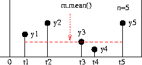
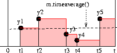
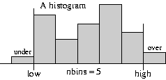

SimPy Manual¶
- Authors
Tony Vignaux <Vignaux@users.sourceforge.net>
Klaus Muller <Muller@users.sourceforge.net>
Bob Helmbold
- SimPy release
2.3.1
- SimPy Web-site
- Python-Version
2.6 and later
- Date
Oct 16, 2022
Contents
This document describes SimPy version 2.3.1. Changes from the previous version are listed in Appendix A0.
Note
This document does not describe the object oriented (OO) API which has been added to SimPy with version 2.0. SimPy 2.0 is fully backward compatible with previous versions. The procedural API and the OO API co-exist happily in SimPy 2.x.
- 1
The variable
version, imported fromSimPy.Simulation, contains the revision number and date of the current version.
Introduction¶
SimPy is a Python-based discrete-event simulation system that models active components such as messages, customers, trucks, planes by parallel processes. It provides a number of tools for the simulation programmer including Processes to model active entities, three kinds of resource facilities (Resources, Levels, and Stores) and ways of recording results by using Monitors and Tallys.
The basic active elements of a SimPy model are process objects (i.e., objects of a Process class – see Processes). As a general practice and for brevity we will often refer to both process objects and their classes as “processes.” Thus, “process” may refer to a Process class or to a process object, depending on context. To avoid ambiguity or for added emphasis we often explicitly state whether a class or an object is intended. In addition we will use “entity” to refer to process objects as this is frequently used in the simulation literature. Here, though, we restrict it to process objects and it will not be used for any other elements in the simulation.
During the simulation, Process objects may be delayed for fixed or random times, queued at resource facilities, and may be interrupted by or interact in other ways with other processes and components. For example, Automobiles in a model of a gas station may have to queue while waiting for a pump to become available . Once obtaining a pump it takes some time to fill before releasing the pump.
A SimPy script contains the declaration of one or more Process classes and the creation of process objects (entities) from them. Each process object executes its Process Execution Method (referred to later as a PEM), a method that determines its actions. Each PEM runs in parallel with (and may interact with) the PEMs of other process objects.
There are three types of resource facilities (Resources, Levels, and Stores). Each type models a congestion point where process objects may have to queue while waiting to acquire or, in some cases to deposit, a resource.
Resources have several resource units, each of which may be used by process objects. Extending the example above, the gas station might be modelled as a resource with its pumps as resource units. On receiving a request for a pump from a car, the gas station resource automatically queues waiting cars until one becomes available. The pump resource unit is held by the car until it is released for possible use by another car.
Levels model the supply and consumption of a homogeneous undifferentiated “material.” The Level at any time holds an amount of material that is fully described by a scalar (real or integer). This can be increased or decreased by process objects. For example, a gas (petrol) station stores gas in large storage tanks. The tanks can be increased by Tanker deliveries and reduced by cars refuelling. A car need not return the gas to the Level in contrast to the requirement for Resource units.
Stores model the production and consumption of individual items. A store hold a list of items. Process objects can insert or remove items from the list. For example, surgical procedures (treated as process objects) require specific lists of personnel and equipment that may be treated as the items in a Store facility such as a clinic or hospital. The items held in a Store can be of any Python type. In particular they can be process objects, and this may be exploited to facilitate modelling Master/Slave relationships.
In addition to the number of free units or quantities, resource facilities all hold queues of waiting process objects which are operated automatically by SimPy. They also operate a reneging mechanism so that a process object can abandon the wait.
Monitors and Tallys are used to compile statistics as a function of time on variables such as waiting times and queue lengths. These statistics consist of simple averages and variances, time-weighted averages, or histograms. They can be gathered on the queues associated with Resources, Levels and Stores. For example we may collect data on the average number of cars waiting at a gas station and the distribution of their waiting times. Tallys update the current statistics as the simulation progresses, but cannot preserve complete time-series records. Monitors can preserve complete time-series records that may later be used for more advanced post-simulation analyses.
Before attempting to use SimPy, you should be able to write Python code. In particular, you should be able to define and use classes and their objects. Python is free and usable on most platforms. We do not expound it here. You can find out more about it and download it from the Python web-site (http://www.Python.org). SimPy requires Python 2.3 or later.
[Return to Top ]
Simulation with SimPy¶
To use the SimPy simulation system you must import its Simulation
module (or one of the alternatives):
from SimPy.Simulation import *
All discrete-event simulation programs automatically maintain the
current simulation time in a software clock. This cannot be changed by
the user directly. In SimPy the current clock value is returned by the
now() function.
At the start of the simulation the software clock is set to 0.0. While the simulation program runs, simulation time steps forward from one event to the next. An event occurs whenever the state of the simulated system changes. For example, an event might be the arrival or departure of a car from the gas station.
The following statement initializes global simulation variables and sets the software clock to zero. It must appear in the script before any SimPy process objects are activated.
initialize( )
This is followed by SimPy statements creating and activating process objects. Activation of process objects adds events to the simulation schedule. Execution of the simulation itself starts with the following statement:
simulate(until=endtime)
The simulation starts, and SimPy seeks and executes the first scheduled event. Having executed that event, the simulation seeks and executes the next event, and so on.
Typically a simulation is terminated when endtime is reached but it can be stopped at any time by the command:
stopSimulation( )
now( ) will then equal the time when this was called. The
simulation will also stop if there are no more events to execute (so
now() equals the time the last scheduled event occurred)
After the simulation has stopped, further statements can be executed.
now() will retain the time of stopping and data held in Monitors
will be available for display or further analysis.
The following fragment shows only the main block in a simulation
program. (Complete, runnable examples are shown in Example 1 and
Example 2). Here Message is a (previously defined) Process
class and m is defined as an object of that class, that is, a
particular message. Activating m has the effect of scheduling at
least one event by starting the PEM of m (here called go).
The simulate(until=1000.0) statement starts the simulation itself,
which immediately jumps to the first scheduled event. It will continue
until it runs out of events to execute or the simulation time reaches
1000.0. When the simulation stops the (previously written) Report
function is called to display the results:
1initialize()
2m = Message()
3activate(m,m.go(),at=0.0)
4simulate(until=1000.0)
5
6Report() # report results when the simulation finishes
The object-oriented interface¶
An object-oriented API interface was added in SimPy 2.0. It is
described more fully in SimPyOO_API. It defines a class of
Simulation objects and makes running multiple simulations cleaner
and easier. It is compatible with the procedural version described in
this Manual. Using the object-oriented API, the program fragment listed
at the end of the previous subsection would look like this:
1s=Simulation()
2s.initialize()
3m = Message(sim=s)
4s.activate(m,m.go(),at=0.0)
5s.simulate(until=1000.0)
6
7Report() # report results when the simulation finishes
Further examples of the OO style exist in the SimPyModels directory and the Bank Tutorial.
Alternative SimPy simulation libraries¶
In addition to SimPy.Simulation, SimPy provides four alternative
simulation libraries which have the basic SimPy.Simulation
capabilities, plus additional facilities:
SimPy.SimulationTrace for program tracing: With
from SimPy.SimulationTrace import *, any SimPy program automatically generates detailed event-by-event tracing output. This makes the library ideal for program development/testing and for teaching SimPy.SimPy.SimulationRT for real time synchronization:
from SimPy.SimulationRT import *facilitates synchronizing simulation time and real (wall-clock) time. This capability can be used to implement, e.g., interactive game applications or to demonstrate a model’s execution in real time.SimPy.SimulationStep for event-stepping through a simulation: The import
from SimPy.SimulationStep import *provides an API for stepping through a simulation event by event. This can assist with debugging models, interacting with them on an event-by-event basis, getting event-by-event output from a model (e.g. for plotting purposes), etc.SimPy.SimulationGUIDebug for event-stepping through a simulation with a GUI:
from SimPy.SimulationGUIDebug import *provides an API for stepping through a simulation event-by-event, with a GUI for user control. The event list, Process and Resource objects are shown in windows. This is useful for debugging models and for teaching discrete event simulation with SimPy.
[Return to Top ]
Processes¶
The active objects for discrete-event simulation in SimPy are process objects – instances of some class that inherits from SimPy’s Process class.
For example, if we are simulating a computing network we might model
each message as an object of the class Message. When message
objects arrive at the computing network they make transitions between
nodes, wait for service at each one, are served for some time, and
eventually leave the system. The Message class specifies all the
actions of each message in its Process Execution Method (PEM).
Individual message objects are created as the simulation runs, and
their evolutions are directed by the Message class’s PEM.
Defining a process¶
Each Process class inherits from SimPy’s Process class. For example
the header of the definition of a new Message Process class would
be:
class Message(Process):
At least one Process Execution Method (PEM) must be defined in each
Process class 1. A PEM may have arguments in addition to the required
self argument that all methods must have. Naturally, other
methods and, in particular, an __init__ method, may be defined.
- 2
More than one can be defined but only one can be executed by any process object.
A Process Execution Method (PEM)defines the actions that are performed by its process objects. Each PEM must contain at least one of theyieldstatements, described later. This makes it a Python generator function so that it has resumable execution – it can be restarted again after the yield statement without losing its current state. A PEM may have any name of your choice. For example it may be calledexecute( )orrun( ).“The
yieldstatements are simulation commands which affect an ongoing life-cycle of Process objects. These statements control the execution and synchronization of multiple processes. They can delay a process, put it to sleep, request a shared resource or provide a resource. They can add new events on the simulation event schedule, cancel existing ones, or cause processes to wait for a state change.”For example, here is a the Process Execution Method,
go(self), for theMessageclass. Upon activation it prints out the current time, the message object’s identification number and the word “Starting”. After a simulated delay of 100.0 time units (in theyield hold, ...statement) it announces that this message object has “Arrived”:def go(self): print now(), self.i, 'Starting' yield hold,self,100.0 print now(), self.i, 'Arrived'
A process object’s PEM starts execution when the object is activated, provided the
simulate(until= ...)statement has been executed.__init__(self, …), where … indicates method arguments. This method initializes the process object, setting values for some or all of its attributes. As for any sub-class in Python, the first line of this method must call the
Processclass’s__init__( )method in the form:Process.__init__(self)You can then use additional commands to initialize attributes of the Process class’s objects. You can also override the standard
nameattribute of the object.The
__init__( )method is always called whenever you create a new process object. If you do not wish to provide for any attributes other than aname, the__init__method may be dispensed with. An example of an__init__( )method is shown in the example below.
Creating a process object¶
An entity (process object) is created in the usual Python manner by
calling the class. Process classes have a single argument, name
which can be specified if no __init__ method is defined. It defaults to
'a_process'. It can be over-ridden if an __init__ method is defined.
For example to create a new Message object with a name
Message23:
m = Message(name="Message23")
Note
When working through this and all other SimPy manuals, the reader is encouraged to type in, run and experiment with all examples as she goes. No better way of learning exists than doing! A suggestion: if you want to see how a SimPy model is being executed, trace it by replacing from SimPy.Simulation import * with from SimPy.SimulationTrace import *. Any Python environment is suitable – an interactive Python session, IDLE, IPython, Scite …
Example 1: This is is a complete, runnable, SimPy script. We declare a
Messageclass and define an__init__( )method and a PEM calledgo( ). The__init__( )method provide an instance variables of an identification number and message length. We do not actually use thelenattribute in this example.Two
messages,p1andp2are created.p1andp2are activated to start at simulation times 0.0 and 6.0, respectively. Nothing happens until thesimulate(until=200)statement. When both messages have finished (at time 6.0+100.0=106.0) there will be no more events so the simulation will stop at that time:1from SimPy.Simulation import Process, activate, initialize, hold, now, simulate 2 3 4class Message(Process): 5 """A simple Process""" 6 def __init__(self, i, len): 7 Process.__init__(self, name='Message' + str(i)) 8 self.i = i 9 self.len = len 10 11 def go(self): 12 print('%s %s %s' % (now(), self.i, 'Starting')) 13 yield hold, self, 100.0 14 print('%s %s %s' % (now(), self.i, 'Arrived')) 15 16 17initialize() 18p1 = Message(1, 203) # new message 19activate(p1, p1.go()) # activate it 20p2 = Message(2, 33) 21activate(p2, p2.go(), at=6.0) 22simulate(until=200) 23print('Current time is %s' % now()) # will print 106.0Running this program gives the following output:
10 1 Starting 26.0 2 Starting 3100.0 1 Arrived 4106.0 2 Arrived 5Current time is 106.0
Elapsing time in a Process¶
A PEM uses the yield hold command to temporarily delay a process
object’s operations.
yield hold¶
yield hold,self,tCauses the process object to delay t time units 2. After the delay, it continues with the next statement in its PEM. During the
holdthe object’s operations are suspended.
- 3
unless it is further delayed by being interrupted.
This is used to model any elapsed time an entity might be involved in. For example while it is passively being provided with service.
Example 2: In this example the Process Execution Method,
buy, has an extra argument,budget:1from SimPy.Simulation import Process, activate, hold, initialize, simulate 2 3 4class Customer(Process): 5 def buy(self, budget=0): 6 print('Here I am at the shops %s' % self.name) 7 t = 5.0 8 for i in range(4): 9 yield hold, self, t 10 # executed 4 times at intervals of t time units 11 print('I just bought something %s' % self.name) 12 budget -= 10.00 13 print('All I have left is %s I am going home %s' % (budget, self.name)) 14 15 16initialize() 17 18# create a customer named "Evelyn", 19C = Customer(name='Evelyn') 20 21# and activate her with a budget of 100 22activate(C, C.buy(budget=100), at=10.0) 23 24simulate(until=100.0)
Starting and stopping SimPy Process Objects¶
A process object is “passive” when first created, i.e., it has no
scheduled events. It must be activated to start its Process
Execution Method. To activate an instance of a Process class you can
use either the activate function or the start method of the
Process. (see the Glossary for an explanation of the modified Backus-Naur Form (BNF)
notation used).
activate¶
activate(p, p.pemname([args])[,{at=now()|delay=0}][,prior=False])activates process object p, provides its Process Execution Method p.pemname( ) with arguments args and possibly assigns values to the other optional parameters. The default is to activate at the current time (
at=now( )) with no delay (delay=0.0) andpriorset toFalse. You may assign other values toat,delay, andprior.Example: to activate a process object,
custwith namecust001at time 10.0 using a PEM calledlifetime:activate(cust,cust.lifetime(name='cust001'),at=10.0)
However,
delayoverridesat, in the sense that when adelay=period clause is included, then activation occurs atnow( )ornow( )+period (whichever is larger), irrespective of what value of t is assigned in theat=t clause. This is true even when the value of period in the delay clause is zero, or even negative. So it is better and clearer to choose one (or neither) ofat=t anddelay=period, but not both.If you set
prior=True, then process object p will be activated before any others that happen to be scheduled for activation at the same time. So, if several process objects are scheduled for activation at the same time and all haveprior=True, then the last one scheduled will actually be the first to be activated, the next-to-last of those scheduled, the second to be activated, and so forth.Retroactive activations that attempt to activate a process object before the current simulation time terminate the simulation with an error report.
start¶
An alternative to activate() function is the start
method. There are a number of ways of using it:
p.
start(p.pemname([args])[,{at=now()|delay=0}][,prior=False])is an alternative to the
activatestatement. p is a Process object. The generator function, pemname, can have any identifier (such asrun,life-cycle, etc). It can have parameters.For example, to activate the process object
custusing the PEM with identifier,lifetimeat time 10.0 we would use:cust.start(cust.lifetime(name='cust001'),at=10.0)
p.
start([p.ACTIONS()][,{at=now()|delay=0}][,prior=False])if
pis a Process object and the generator function is given the standard identifier,ACTIONS.ACTIONS, is recognized as a Process Execution Method. It may not have parameters. The call p.ACTIONS()is optional.For example, to activate the process object
custwith the standard PEM identifierACTIONSat time 10.0, the following are equivalent (and the second version is more convenient):cust.start(cust.ACTIONS(), at=10.0) cust.start(at=10.0)
An anonymous instance of Process class PR can be created and activated in one command using
startwith the standard PEM identifier,ACTIONS.PR.
([args]).start([,{at=now()|delay=0}][,prior=False])Here, PR is the identifier for the Process class and not for a Process object as was p, in the statements above. The generator method
ACTIONSmay not have parameters.For example, if
Customeris a SimPy Process class we can create and activate an anonymous instance at time 10.0:Customer(name='cust001').start(at=10.0)
You can use the passivate, reactivate, or cancel commands to
control Process objects.
passivate¶
yield passivate,selfsuspends the process object itself. It becomes “passive”. To get it going again another process must
reactivateit.
reactivate¶
reactivate(p[,{at=now()|delay=0}][,prior=False])reactivates a passive process object, p. It becomes “active”. The optional parameters work as for
activate. A process object cannot reactivate itself. To temporarily suspend itself it must useyield hold,self,tinstead.
cancel¶
self.cancel(p)deletes all scheduled future events for process object p. A process cannot
cancelitself. If that is required, useyield passivate,selfinstead. Only “active” process objects can be canceled.
A process object is “terminated” after all statements in its process execution method have been completed. If the object is still referenced by a variable, it becomes just a data container. This can be useful for extracting information. Otherwise, it is automatically destroyed.
Even activated process objects will not start operating until the
simulate(until=endtime) statement is executed. This starts the
simulation going and it will continue until time endtime (unless it runs
out of events to execute or the command stopSimulation( ) is
executed).
Example 3 This simulates a firework with a time fuse. We have put
in a few extra yield hold commands for added suspense.
1from SimPy.Simulation import Process, activate, initialize, hold, now, simulate
2
3
4class Firework(Process):
5
6 def execute(self):
7 print('%s firework launched' % now())
8 yield hold, self, 10.0 # wait 10.0 time units
9 for i in range(10):
10 yield hold, self, 1.0
11 print('%s tick' % now())
12 yield hold, self, 10.0 # wait another 10.0 time units
13 print('%s Boom!!' % now())
14
15
16initialize()
17f = Firework() # create a Firework object, and
18 # activate it (with some default parameters)
19activate(f, f.execute(), at=0.0)
20simulate(until=100)
Here is the output. No formatting was attempted so it looks a bit ragged:
10 firework launched
211.0 tick
312.0 tick
413.0 tick
514.0 tick
615.0 tick
716.0 tick
817.0 tick
918.0 tick
1019.0 tick
1120.0 tick
1230.0 Boom!!
A source fragment¶
One useful program pattern is the source. This is a process object with a Process Execution Method (PEM) that sequentially generates and activates other process objects – it is a source of other process objects. Random arrivals can be modelled using random intervals between activations.
Example 4: A source. Here a source creates and activates a series of
customers who arrive at regular intervals of 10.0 units of time. This
continues until the simulation time exceeds the specified finishTime
of 33.0. (Of course, to model customers with random inter-arrival
times the yield hold statement would use a random variate, such as
expovariate( ), instead of the constant 10.0 inter-arrival time used
here.) The following example assumes that the Customer class has
previously been defined with a PEM called run that does not require
any arguments:
1class Source(Process):
2
3 def execute(self, finish):
4 while now() < finish:
5 c = Customer() # create a new customer object, and
6 # activate it (using default parameters)
7 activate(c, c.run())
8 print('%s %s) % (now(), 'customer')
9 yield hold, self, 10.0
10
11initialize()
12g = Source() # create the Source object, g,
13 # and activate it
14activate(g, g.execute(finish=33.0), at=0.0)
15simulate(until=100)
Asynchronous interruptions¶
An active process object can be interrupted by another but cannot interrupt itself.
interrupt¶
self.interrupt(victim)The interrupter process object uses its
interruptmethod to interrupt the victim process object. The interrupt is just a signal. After this statement, the interrupter process object continues its PEM.For the interrupt to have an immediate effect, the victim process object must be active – that is it must have an event scheduled for it (that is, it is “executing” a
yield hold). If the victim is not active (that is, it is either passive or terminated) the interrupt has no effect. For example, process objects queuing for resource facilities cannot be interrupted because they are passive during their queuing phase.
If interrupted, the victim returns from its yield hold statement
prematurely. It must then check to see if it has been interrupted by
calling:
interrupted¶
self.interrupted( )which returns
Trueif it has been interrupted. The victim can then either continue in the current activity or switch to an alternative, making sure it tidies up the current state, such as releasing any resources it owns.
interruptCause¶
self.interruptCausewhen the victim has been interrupted,
self.interruptCauseis a reference to the interrupter object.
interruptLeft¶
self.interruptLeftgives the time remaining in the interrupted
yield hold. The interruption is reset (that is, “turned off”) at the victim’s next call to ayield hold.
..index:: interruptReset
interruptReset¶
self.interruptReset( )will reset the interruption.
It may be helpful to think of an interruption signal as instructing the victim to determine whether it should interrupt itself. If the victim determines that it should interrupt itself, it then becomes responsible for making any necessary readjustments – not only to itself but also to any other simulation components that are affected. (The victim must take responsibility for these adjustments, because it is the only simulation component that “knows” such details as whether or not it is interrupting itself, when, and why.)
Example 5. A simulation with interrupts. A bus is subject to
breakdowns that are modelled as interrupts caused by a Breakdown
process. Notice that the yield hold,self,tripleft statement may
be interrupted, so if the self.interrupted() test returns True
a reaction to it is required. Here, in addition to delaying the bus
for repairs, the reaction includes scheduling the next breakdown. In
this example the Bus Process class does not require an
__init__() method:
1from SimPy.Simulation import (Process, activate, hold, initialize, now,
2 reactivate, simulate)
3
4
5class Bus(Process):
6
7 def operate(self, repairduration, triplength): # PEM
8 tripleft = triplength # time needed to finish trip
9 while tripleft > 0:
10 yield hold, self, tripleft # try to finish the trip
11 if self.interrupted(): # if another breakdown occurs
12 print('%s at %s' % (self.interruptCause.name, now()))
13 tripleft = self.interruptLeft # time to finish the trip
14 self.interruptReset() # end interrupt state
15 reactivate(br, delay=repairduration) # restart breakdown br
16 yield hold, self, repairduration # delay for repairs
17 print('Bus repaired at %s' % now())
18 else:
19 break # no more breakdowns, bus finished trip
20 print('Bus has arrived at %s' % now())
21
22
23class Breakdown(Process):
24 def __init__(self, myBus):
25 Process.__init__(self, name='Breakdown ' + myBus.name)
26 self.bus = myBus
27
28 def breakBus(self, interval): # process execution method
29 while True:
30 yield hold, self, interval # breakdown interarrivals
31 if self.bus.terminated():
32 break
33 self.interrupt(self.bus) # breakdown to myBus
34
35
36initialize()
37b = Bus('Bus') # create a bus object
38activate(b, b.operate(repairduration=20, triplength=1000))
39br = Breakdown(b) # create breakdown br to bus b
40activate(br, br.breakBus(300))
41simulate(until=4000)
42print('SimPy: No more events at time %s' % now())
The output from this example:
1Breakdown Bus at 300
2Bus repaired at 320
3Breakdown Bus at 620
4Bus repaired at 640
5Breakdown Bus at 940
6Bus repaired at 960
7Bus has arrived at 1060
8SimPy: No more events at time 1260
The bus finishes at 1060 but the simulation finished at 1260. Why? The
breakdowns PEM consists of a loop, one breakdown following
another at 300 intervals. The last breakdown finishes at 960 and
then a breakdown event is scheduled for 1260. But the bus finished at
1060 and is not affected by the breakdown. These details can easily
be checked by importing from SimPy.SimulationTrace and re-running
the program.
Where interrupts can occur, the victim of interrupts must test for
interrupt occurrence after every appropriate yield hold and react
appropriately to it. A victim holding a resource facility when it gets
interrupted continues to hold it.
Advanced synchronization/scheduling capabilities¶
The preceding scheduling constructs all depend on specified time values. That is, they delay processes for a specific time, or use given time parameters when reactivating them. For a wide range of applications this is all that is needed.
However, some applications either require or can profit from an ability to activate processes that must wait for other processes to complete. For example, models of real-time systems or operating systems often use this kind of approach. Event Signalling is particularly helpful in such situations. Furthermore, some applications need to activate processes when certain conditions occur, even though when (or if) they will occur may be unknown. SimPy has a general wait until to support clean implementation of this approach.
This section describes how SimPy provides event Signalling and wait until capabilities.
Creating and Signalling SimEvents¶
As mentioned in the Introduction, for ease of expression when no
confusion can arise we often refer to both process objects and their
classes as “processes”, and mention their object or class status only
for added clarity or emphasis. Analogously, we will refer to objects
of SimPy’s SimEvent class as “SimEvents” 3 (or, if no confusion
can arise, simply as “events”). However, we sometimes mention their
object or class character for clarity or emphasis.
- 4
The name SimEvent was chosen because “event” is already used in Python’s standard library. See Python Library Reference section 7.5 threading – Higher-level threading interface, specifically subsection 7.5.5.
SimEvent objects must be created before they can be fired by a
signal. You create the SimEvent object, sE, from SimPy’s
SimEvent class by a statement like the following:
sE = SimEvent(name='I just had a great new idea!')
A SimEvent’s name attribute defaults to a_SimEvent unless you
provide your own, as shown here. Its occurred attribute,
sE.occurred, is a Boolean that defaults to False. It indicates
whether the event sE has occurred.
You program a SimEvent to “occur” or “fire” by “signalling” it like this:
sE.signal(<payload parameter>)
This “signal” is “received” by all processes that are either “waiting”
or “queueing” for this event to occur. What happens when they receive
this signal is explained in the next section. The <payload
parameter> is optional – it defaults to None. It can be of any
Python type. Any process can retrieve it from the event’s
signalparam attribute, for example by:
message = sE.signalparam
Waiting or Queueing for SimEvents¶
You can program a process either to “wait” or to “queue” for the occurrence of SimEvents. The difference is that all processes “waiting” for some event are reactivated as soon as it occurs. For example, all firemen go into action when the alarm sounds. In contrast, only the first process in the “queue” for some event is reactivated when it occurs. That is, the “queue” is FIFO 5. An example might be royal succession – when the present ruler dies: “The king is dead. Long live the (new) king!” (And all others in the line of succession move up one step.)
You program a process to wait for SimEvents by including in its PEM:
yield waitevent¶
yield waitevent,self,<events part>where <events part> can be either:
one SimEvent object, e.g.
myEvent, ora tuple of SimEvent objects, e.g.
(myEvent,myOtherEvent,TimeOut), ora list of SimEvent objects, e.g.
[myEvent,myOtherEvent,TimeOut]
If none of the events in the <events part> have occurred, the process is passivated and joined to the list of processes waiting for some event in <events part> to occur (or to recur).
On the other hand, when any of the events in the <events part> occur, then all of the processes “waiting” for those particular events are reactivated at the current time. Then the
occurredflag of those particular events is reset toFalse. Resetting theiroccurredflag prevents the waiting processes from being constantly reactivated. (For instance, we do not want firemen to keep responding to any such “false alarms.”) For example, suppose the <events part> lists eventsa, bandcin that order. If eventsaandcoccur, then all of the processes waiting for eventaare reactivated. So are all processes waiting for eventcbut nota. Then theoccurredflags of eventsaandcare toggled toFalse. No direct changes are made to eventbor to any processes waiting for it to occur.
You program a process to “queue” for events by including in its PEM:
yield queueevent¶
yield queueevent,self,<events part>where the <events part> is as described above.
If none of the events in the <events part> has occurred, the process is passivated and appended to the FIFO queue of processes queuing for some event in <events part> to occur (or recur).
But when any of the events in <events part> occur, the process at the head of the “queue” is taken off the queue and reactivated at the current time. Then the
occurredflag of those events that occurred is reset toFalseas in the “waiting” case.
Finding Which Processes Are Waiting/Queueing for an Event, and Which Events Fired¶
SimPy automatically keeps current lists of what processes are
“waiting” or “queueing” for SimEvents. They are kept in the waits
and queues attributes of the SimEvent object and can be read by
commands like the following:
TheProcessesWaitingFor_myEvent = myEvent.waits
TheProcessesQueuedFor_myEvent = myEvent.queues
However, you should not attempt to change these attributes yourself.
Whenever myEvent occurs, i.e., whenever a myEvent.signal(...)
statement is executed, SimPy does the following:
If there are any processes waiting or queued for that event, it reactivates them as described in the preceding section.
If there are no processes waiting or queued (i.e.,
myEvent.waitsandmyEvent.queuesare both empty), it togglesmyEvent.occurredtoTrue.
SimPy also automatically keeps track of which events were fired when a
process object was reactivated. For example, you can get a list of the
events that were fired when the object Godzilla was reactivated with
a statement like this:
GodzillaRevivedBy = Godzilla.eventsFired
Example 6. This complete SimPy script illustrates these
constructs. (It also illustrates that a Process class may have more
than one PEM. Here the Wait_Or_Queue class has two PEMs –
waitup and queueup.):
1from SimPy.Simulation import *
2
3class Wait_Or_Queue(Process):
4 def waitup(self,myEvent): # PEM illustrating "waitevent"
5 # wait for "myEvent" to occur
6 yield waitevent, self, myEvent
7 print 'At %s, some SimEvent(s) occurred that \
8 activated object %s.' %(now(), self.name)
9 print ' The activating event(s) were %s' \
10 %([x.name for x in self.eventsFired])
11
12 def queueup(self, myEvent): # PEM illustrating "queueevent"
13 # queue up for "myEvent" to occur
14 yield queueevent, self, myEvent
15 print 'At %s, some SimEvent(s) occurred that \
16 activated object %s.' %(now(), self.name)
17 print ' The activating event(s) were %s' \
18 %([x.name for x in self.eventsFired])
19
20class Signaller(Process):
21 # here we just schedule some events to fire
22 def sendSignals(self):
23 yield hold, self, 2
24 event1.signal() # fire "event1" at time 2
25 yield hold, self, 8
26 event2.signal() # fire "event2" at time 10
27 yield hold, self, 5
28 event1.signal() # fire all four events at time 15
29 event2.signal()
30 event3.signal()
31 event4.signal()
32 yield hold, self, 5
33 event4.signal() # event4 recurs at time 20
34
35initialize()
36
37# Now create each SimEvent and give it a name
38event1 = SimEvent('Event-1')
39event2 = SimEvent('Event-2')
40event3 = SimEvent('Event-3')
41event4 = SimEvent('Event-4')
42Event_list = [event3,event4] # define an event list
43
44s = Signaller()
45# Activate Signaller "s" *after* events created
46activate (s,s.sendSignals())
47
48w0 = Wait_Or_Queue('W-0')
49# create object named "W-0", and set it to
50# "waitup" for SimEvent "event1" to occur
51activate (w0, w0.waitup(event1))
52w1 = Wait_Or_Queue('W-1')
53activate (w1, w1.waitup(event2))
54w2 = Wait_Or_Queue('W-2')
55activate(w2, w2.waitup(Event_list))
56q1 = Wait_Or_Queue('Q-1')
57# create object named "Q-1", and put it to be first
58# in the queue for Event_list to occur
59activate(q1, q1.queueup(Event_list))
60q2 = Wait_Or_Queue('Q-2')
61# create object named "Q-2", and append it to
62# the queue for Event_list to occur
63activate(q2, q2.queueup(Event_list))
64
65simulate(until=50)
This program outputs:
1At 2, some SimEvent(s) occurred that activated object W-0.
2 The activating event(s) were ['Event-1']
3At 10, some SimEvent(s) occurred that activated object W-1.
4 The activating event(s) were ['Event-2']
5At 15, some SimEvent(s) occurred that activated object W-2.
6 The activating event(s) were ['Event-3']
7At 15, some SimEvent(s) occurred that activated object Q-1.
8 The activating event(s) were ['Event-3', 'Event-4']
9At 20, some SimEvent(s) occurred that activated object Q-2.
10 The activating event(s) were ['Event-4']
Each output line, The activating event(s) were ..., lists the
contents of the named object’s eventsFired attribute. One of those
events “caused” the object to reactivate at the indicated time. Note
that at time 15 objects W-0 and W-1 were not affected by the
recurrence of event1 and event2 because they already were
active. Also at time 15, even though objects W-2, Q-1 and Q-2
were all waiting for event3, only W-2 and Q-1 were
reactivated. Process object Q-2 was not reactivated at that time
because it was not first in the queue. Finally, Q-2 was reactivated
at time 20, when event4 fired again.
“waituntil” synchronization – waiting for any condition¶
SimPy provides the waituntil feature that makes a process’s
progress depend on the state of the simulation. This is useful if, for
example, you need to reactivate a process when (if ever) the
simulation enters the state goodWeather OR (nrCustomers>50 AND
price<22.50). Doing that requires interrogative scheduling,
while all other SimPy synchronization constructs are imperative –
i.e., the condition must be tested after every change in state until
it becomes True.
This requires that after every change in system state SimPy must run a
special (hidden) process that tests and responds appropriately to the
condition’s truth-value. This clearly takes more run time than SimPy’s
imperative scheduling constructs. So SimPy activates its interrogative
testing process only so long as at least one process is executing a
waituntil statement. When this is not the case, the run time overhead
is minimal (about 1 percent extra run time).
yield waituntil¶
You program a process to wait for a condition to be satisfied by including in its PEM a statement of the form:
yield waituntil, self,<cond>
where <cond> is a reference to a function, without parameters, that returns a Boolean value indicating whether the simulation state or condition to be waited for has occurred.
Example 7. This program using the yield waituntil ...
statement. Here the function killed(), in the life() PEM of
the Player process, defines the condition to be waited for
1from SimPy.Simulation import *
2import random
3
4class Player(Process):
5
6 def __init__(self,lives=1,name='ImaTarget'):
7 Process.__init__(self,name)
8 self.lives=lives
9 # provide Player objects with a "damage" property
10 self.damage=0
11
12 def life(self):
13 self.message='Drat! Some %s survived Federation attack!' %(target.name)
14
15 def killed(): # function testing for "damage > 5"
16 return self.damage>5
17
18 while True:
19 yield waituntil,self,killed
20 self.lives-=1; self.damage=0
21 if self.lives==0:
22 self.message= '%s wiped out by Federation at \
23 time %s!' %(target.name,now())
24 stopSimulation()
25
26class Federation(Process):
27
28 def fight(self): # simulate Federation operations
29 print 'Three %s attempting to escape!' %(target.name)
30 while True:
31 if random.randint(0,10)<2: # check for hit on player
32 target.damage+=1 # hit! increment damage to player
33 if target.damage <= 5: # target survives
34 print 'Ha! %s hit! Damage = %i'%(target.name, target.damage)
35 else:
36 if (target.lives-1)==0:
37 print 'No more %s left!' %(target.name)
38 else:
39 print 'Now only %i %s left!' %(target.lives-1,target.name)
40
41 yield hold,self,1
42
43initialize()
44gameOver=100
45 # create a Player object named "Romulans"
46target=Player(lives=3,name='Romulans')
47activate(target,target.life())
48 # create a Federation object
49shooter=Federation()
50activate(shooter,shooter.fight())
51simulate(until=gameOver)
52print target.message
One possible output from this program is shown below. Whether the Romulans are wiped out or some escape depends on what simulation states the randomization feature produces:
1Three Romulans attempting to escape!
2Ha! Romulans hit! Damage = 1
3Ha! Romulans hit! Damage = 2
4Ha! Romulans hit! Damage = 3
5Ha! Romulans hit! Damage = 4
6Ha! Romulans hit! Damage = 5
7 Now only 2 Romulans left!
8Ha! Romulans hit! Damage = 1
9Ha! Romulans hit! Damage = 2
10Ha! Romulans hit! Damage = 3
11Ha! Romulans hit! Damage = 4
12Ha! Romulans hit! Damage = 5
13 Now only 1 Romulans left!
14Ha! Romulans hit! Damage = 1
15Ha! Romulans hit! Damage = 2
16Ha! Romulans hit! Damage = 3
17Ha! Romulans hit! Damage = 4
18Ha! Romulans hit! Damage = 5
19 No more Romulans left!
20Romulans wiped out by Federation at time 73!
The waituntil construct is so general that in principle it could
replace all the other synchronization approaches (but at a run time
cost).
[Return to Top ]
Resources¶
The three resource facilities provided by SimPy are Resources, Levels and Stores. Each models a congestion point where process objects may have to queue up to obtain resources. This section describes the Resource type of resource facility.
An example of queueing for a Resource might be a manufacturing plant
in which a Task (modelled as a process object) needs work done
by a Machine (modelled as a Resource object). If all of the
Machines are currently being used, the Task must wait until
one becomes free. A SimPy Resource can have a number of identical
units, such as a number of identical machine units. A
process obtains a unit of the Resource by requesting it and, when
it is finished, releasing it. A Resource maintains a list of
process objects that have requested but not yet received one of the
Resource’s units (called the waitQ), and another list of processes
that are currently using a unit (the activeQ). SimPy creates and
updates these queues itself – the user can access them, but should
not change them.
Defining a Resource object¶
A Resource object, r, is established by the following statement:
r = Resource(capacity=1, name='a_resource', unitName='units',
qType=FIFO, preemptable=False,
monitored=False, monitorType=Monitor)
where
capacityis a positive real or integer value that specifies the total number of identical units in Resource objectr.
nameis a descriptive name for this Resource object (e.g.,'gasStation').
unitNameis a descriptive name for a unit of the resource (e.g.,'pump').
qTypeis eitherFIFO5 orPriorityQ. It specifies the queue discipline of the resource’swaitQ; typically, this isFIFOand that is the default value. IfPriorityQis specified, then higher-priority requests waiting for a unit of Resourcerare inserted into thewaitQahead of lower priority requests. See Priority requests for a Resource unit for details.
preemptableis a Boolean (FalseorTrue); typically, this isFalseand that is the default value. If it isTrue, then a process requesting a unit of this resource may preempt a lower-priority process in theactiveQ, i.e., one that is already using a unit of the resource. See Preemptive requests for a Resource unit for details.
monitoredis a boolean (FalseorTrue). If set toTrue, then information is gathered on the sizes ofr’swaitQandactiveQ, otherwise not.
monitorTypeis eitherMonitororTallyand indicates the type of Recorder to be used (see Recording Resource queue lengths for an example and additional discussion).
Each Resource object, r, has the following additional attributes:
r.n, the number of units that are currently free.
r.waitQ, a queue (list) of processes that have requested but not yet received a unit ofr, solen(r.waitQ)is the number of process objects currently waiting.
r.activeQ, a queue (list) of process objects currently using one of the Resource’s units, solen(r.activeQ)is the number of units that are currently in use.
r.waitMon, the record (made by aMonitoror aTallywhenevermonitored==True) of the activity inr.waitQ. So, for example,r.waitMon.timeaverage()is the average number of processes inr.waitQ. See Recording Resource queue lengths for an example.
r.actMon, the record (made by aMonitoror aTallywhenevermonitored==True) of the activity inr.activeQ.
Requesting and releasing a unit of a Resource¶
A process can request and later release a unit of the Resource object,
r, by using the following yield commands in a Process Execution
Method:
yield request¶
yield request,self,r [,P=0]requests a unit of Resource r with (optional) real or integer priority value P. If no priority is specified, it defaults to 0. Larger values of P represent higher priorities. See the following sections on Queue Order for more information on how priority values are used. Although this form of request can be used for either
FIFOorPriorityQpriority types, these values are ignored whenqType==FIFO.
yield release¶
yield release,self,rreleases the unit of r.
Queue Order¶
If a requesting process must wait it is placed into the resource’s
waitQ in an order determined by settings of the resource’s
qType and preemptable attributes and of the priority value it
uses in the request call.
Non-priority queueing¶
If the qType is not specified it takes the presumed value of
FIFO 5. In that case processes wait in the usual
first-come-first-served order.
If a Resource unit is free when the request is made, the requesting
process takes it and moves on to the next statement in its PEM. If no
Resource unit is available when the request is made, then the
requesting process is appended to the Resource’s waitQ and
suspended. The next time a unit becomes available the first process
in the r.waitQ takes it and continues its execution. All priority
assignments are ignored. Moreover, in the FIFO case no preemption is
possible, for preemption requires that priority assignments be
recognized. (However, see the Note on preemptive requests with waitQ
in FIFO order for one way of simulating such situations.)
Example In this complete script, the server Resource object is
given two resource units (capacity=2). By not specifying its
Qtype it takes the default value, FIFO. Here six clients
arrive in the order specified by the program. They all request a
resource unit from the server Resource object at the same
time. Even though they all specify a priority value in their requests,
it is ignored and they get their Resource units in the same order as
their requests:
1from SimPy.Simulation import (Process, Resource, activate, initialize, hold,
2 now, release, request, simulate)
3
4
5class Client(Process):
6 inClients = [] # list the clients in order by their requests
7 outClients = [] # list the clients in order by completion of service
8
9 def __init__(self, name):
10 Process.__init__(self, name)
11
12 def getserved(self, servtime, priority, myServer):
13 Client.inClients.append(self.name)
14 print('%s requests 1 unit at t = %s' % (self.name, now()))
15 # request use of a resource unit
16 yield request, self, myServer, priority
17 yield hold, self, servtime
18 # release the resource
19 yield release, self, myServer
20 print('%s done at t = %s' % (self.name, now()))
21 Client.outClients.append(self.name)
22
23
24initialize()
25
26# the next line creates the ``server`` Resource object
27server = Resource(capacity=2) # server defaults to qType==FIFO
28
29# the next lines create some Client process objects
30c1, c2 = Client(name='c1'), Client(name='c2')
31c3, c4 = Client(name='c3'), Client(name='c4')
32c5, c6 = Client(name='c5'), Client(name='c6')
33
34# in the next lines each client requests
35# one of the ``server``'s Resource units
36activate(c1, c1.getserved(servtime=100, priority=1, myServer=server))
37activate(c2, c2.getserved(servtime=100, priority=2, myServer=server))
38activate(c3, c3.getserved(servtime=100, priority=3, myServer=server))
39activate(c4, c4.getserved(servtime=100, priority=4, myServer=server))
40activate(c5, c5.getserved(servtime=100, priority=5, myServer=server))
41activate(c6, c6.getserved(servtime=100, priority=6, myServer=server))
42
43simulate(until=500)
44
45print('Request order: %s' % Client.inClients)
46print('Service order: %s' % Client.outClients)
This program results in the following output:
1c1 requests 1 unit at t = 0
2c2 requests 1 unit at t = 0
3c3 requests 1 unit at t = 0
4c4 requests 1 unit at t = 0
5c5 requests 1 unit at t = 0
6c6 requests 1 unit at t = 0
7c1 done at time = 100
8c2 done at time = 100
9c3 done at time = 200
10c4 done at time = 200
11c5 done at time = 300
12c6 done at time = 300
13
14Request order: ['c1', 'c2', 'c3', 'c4', 'c5', 'c6']
15Service order: ['c1', 'c2', 'c3', 'c4', 'c5', 'c6']
As illustrated, the clients are served in FIFO order. Clients c1
and c2 each take one Resource unit right away, but the others must
wait. When c1 and c2 finish with their resources, clients
c3 and c4 can each take a unit, and so forth.
Priority requests for a Resource unit¶
If the Resource r is defined with qType==PriorityQ, priority
values in requests are recognized. If a Resource unit is available
when the request is made, the requesting process takes it. If no
Resource unit is available when the request is made, the requesting
process is inserted into the Resource’s waitQ in order of priority
(from high to low) and suspended. For an example where priorities are
used, we simply change the preceding example’s specification of the
server Resource object to:
server=Resource(capacity=2, qType=PriorityQ)
where, by not specifying it, we allow preemptable to take its
default value, False.
Example After this change the program’s output becomes:
1c1 requests 1 unit at t = 0
2c2 requests 1 unit at t = 0
3c3 requests 1 unit at t = 0
4c4 requests 1 unit at t = 0
5c5 requests 1 unit at t = 0
6c6 requests 1 unit at t = 0
7c1 done at time = 100
8c2 done at time = 100
9c6 done at time = 200
10c5 done at time = 200
11c4 done at time = 300
12c3 done at time = 300
13
14Request order: ['c1', 'c2', 'c3', 'c4', 'c5', 'c6']
15Service order: ['c1', 'c2', 'c6', 'c5', 'c4', 'c3']
Although c1 and c2 have the lowest priority values, each requested
and got a server unit immediately. That was because at the time they
made those requests a server unit was available and the
server.waitQ was empty – it did not start to fill until c3 made
its request and found all of the server units busy. When c1 and
c2 completed service, c6 and c5 (with the highest priority
values of all processes in the waitQ) each got a Resource unit,
etc.
When some processes in the waitQ have the same priority level as a
process making a priority request, SimPy inserts the requesting
process immediately behind them. Thus for a given priority value,
processes are placed in FIFO order. For example, suppose that when a
“priority 3” process makes its priority request the current waitQ
consists of processes with priorities [5,4,3a,3b,3c,2a,2b,1],
where the letters indicate the order in which the equal-priority
processes were placed in the queue. Then SimPy inserts this
requesting process into the current waitQ immediately behind its
last “priority 3” process. Thus, the new waitQ will be
[5,4,3a,3b,3c,3d,2a,2b,1], where the inserted process is 3d.
One consequence of this is that, if all priority requests are assigned
the same priority value, then the waitQ will in fact be maintained
in FIFO order. In that case, using a FIFO instead of a
PriorityQ discipline provides some saving in execution time which
may be important in simulations where the waitQ may be long.
Preemptive requests for a Resource unit¶
In some models, higher priority processes can actually preempt lower
priority processes, i.e., they can take over and use a Resource unit
currently being used by a lower priority process whenever no free
Resource units are available. A Resource object that allows its units
to be preempted is created by setting its properties to
qType==PriorityQ and preemptable==True.
Whenever a preemptable Resource unit is free when a request is
made, then the requesting process takes it and continues its
execution. On the other hand, when a higher priority request finds all
the units in a preemptable Resource in use, then SimPy adopts the
following procedure regarding the Resource’s activeQ and
waitQ:
The process with the lowest priority is removed from the
activeQ, suspended, and put at the front of thewaitQ– so (barring additional preemptions) it will be the next one to get a resource unit.The preempting process gets the vacated resource unit and is inserted into the
activeQin order of its priority value.The time for which the preempted process had the resource unit is taken into account when the process gets into the
activeQagain. Thus, its total hold time is always the same, regardless of how many times it has been preempted.
Warning: SimPy only supports preemption of processes which are implemented in the following pattern:
1yield request (one or more request statements)
2<some code>
3yield hold (one or more hold statements)
4<some code>
5yield release (one or more release statements)
Modelling the preemption of a process in any other pattern may lead to errors or exceptions.
We emphasize that a process making a preemptive request to a
fully-occupied Resource gets a resource unit if – but only if – some
process in the current activeQ has a lower priority. Otherwise, it
will be inserted into the waitQ at a location determined by its
priority value and the current contents of the waitQ, using a
procedure analogous to that described for priority requests near the
end of the preceding section on Priority requests for a Resource
unit. This may have the effect of advancing the preempting process
ahead of any lower-priority processes that had earlier been preempted
and put at the head of the waitQ. In fact, if several preemptions
occur before a unit of resource is freed up, then the head of the
waitQ will consist of the processes that have been preempted – in
order from the last process preempted to the first of them.
Example In this example two clients of different priority compete for the same resource unit:
1from SimPy.Simulation import *
2
3class Client(Process):
4 def __init__(self,name):
5 Process.__init__(self,name)
6
7 def getserved(self,servtime,priority,myServer):
8 print self.name, 'requests 1 unit at t=',now()
9 yield request, self, myServer, priority
10 yield hold, self, servtime
11 yield release, self,myServer
12 print self.name,'done at t= ',now()
13
14initialize()
15# create the *server* Resource object
16server=Resource(capacity=1,qType=PriorityQ,preemptable=1)
17# create some Client process objects
18c1=Client(name='c1')
19c2=Client(name='c2')
20activate(c1,c1.getserved(servtime=100,priority=1,myServer=server),at=0)
21activate(c2,c2.getserved(servtime=100,priority=9,myServer=server),at=50)
22simulate(until=500)
The output from this program is:
c1 requests 1 unit at t= 0
c2 requests 1 unit at t= 50
c2 done at t= 150
c1 done at t= 200
Here, c1 is preempted by c2 at t=50. At that time, c1
had held the resource for 50 of its total of 100 time units. When
c2 finished and released the resource unit at 150, c1 got the
resource back and finished the last 50 time units of its service at
t=200.
If preemption occurs when the last few processes in the current
activeQ have the same priority value, then the last process in the
current activeQ is the one that will be preempted and inserted
into the waitQ ahead of all others. To describe this, it will be
convenient to indicate by an added letter the order in which
equal-priority processes have been inserted into a queue. Now, suppose
that a “priority 4” process makes a preemptive request when the
current activeQ priorities are [5,3a,3b] and the current
waitQ priorities are [2,1,0a,0b]. Then process 3b will be
preempted. After the preemption the activeQ will be [5,4,3a]
and the waitQ will be [3b,2,1,0a,0b].
Note on preemptive requests with waitQ in FIFO order¶
You may consider doing the following to model a system whose queue of
items waiting for a resource is to be maintained in FIFO order, but in
which preemption is to be possible. It uses SimPy’s preemptable
Resource objects, and uses priorities in a way that allows for
preempts while maintaining a FIFO waitQ order.
Set
qType=PriorityQandpreemptable=True(so that SimPy will process preemptive requests correctly).Model “system requests that are to be considered as non-preemptive” in SimPy as process objects each of which has exactly the same (low) priority value – for example, either assign all of them a priority value of 0 (zero) or let it default to that value. (This has the effect of maintaining all of these process objects in the
waitQin FIFO order, as explained at the end of the section on Priority requests for a Resource unit, above.)Model “system requests that are to be considered as preemptive” in SimPy as process objects each of which is assigned a uniform priority value, but give them a higher value than the one used to model the “non-preemptive system requests” – for example, assign all of them a priority value of 1 (one). Then they will have a higher priority value than any of the non-preemptive requests.
Example Here is an example of how this works for a Resource with
two Resource units – we give the activeQ before the waitQ
throughout this example:
Suppose that the current
activeQandwaitQare[0a,0b]and[0c],respectively.A “priority 1” process makes a preemptive request. Then the queues become:
[1a,0a]and`` [0b,0c]``.Another “priority 1” process makes a preemptive request. Then the queues become:
[1a,1b]and[0a,0b,0c].A third “priority 1” process makes a preemptive request. Then the queues become:
[1a,1b]and[1c,0a,0b,0c].Process
1afinishes using its resource unit. Then the queues become:[1b,1c]and[0a,0b,0c].
Reneging – leaving a queue before acquiring a resource¶
In most real world situations, people and other items do not wait forever for a requested resource facility to become available. Instead, they leave its queue when their patience is exhausted or when some other condition occurs. This behaviour is called reneging, and the reneging person or thing is said to renege.
SimPy provides an extended (i.e., compound) yield request statement
to handle reneging.
Reneging yield request¶
There are two types of reneging clause, one for reneging after a certain time and one for reneging when an event has happened. Their general form is
yield (request,self,r [,P]),(<reneging clause>)
to request a unit of Resource r (with optional priority P,
assuming the Resource has been defined as a priorityQ) but with
reneging.
A SimPy program that models Resource requests with reneging must use the following pattern of statements:
1yield (request,self,r),(<reneging clause>)
2if self.acquired(resource):
3 ## process got resource and so did NOT renege
4 . . . .
5 yield release,self,resource
6else:
7 ## process reneged before acquiring resource
8 . . . . .
A call to the self.acquired(resource) method is mandatory after a
compound yield request statement. It not only indicates whether or
not the process has acquired the resource, it also removes the
reneging process from the resource’s waitQ.
Reneging after a time limit¶
To make a process give up (renege) after a certain time, use a reneging clause of the following form:
yield (request,self,r [,P]),(hold,self,waittime)
Here the process requests one unit of the resource r with optional
priority P. If a resource unit is available it takes it and continues
its PEM. Otherwise, as usual, it is passivated and inserted into r‘s waitQ.
The process takes a unit if it becomes available before waittime
expires and continues executing its PEM. If, however, the process has
not acquired a unit before the waittime has expired it abandons the
request (reneges) and leaves the waitQ.
Example: part of a parking lot simulation:
1. . . .
2parking_lot=Resource(capacity=10)
3patience=5 # wait no longer than "patience" time units
4 # for a parking space
5park_time=60 # park for "park_time" time units if get a parking space
6. . . .
7yield (request,self,parking_lot),(hold,self,patience)
8if self.acquired(parking_lot):
9 # park the car
10 yield hold,self,park_time
11 yield release,self,parking_lot
12else:
13 # patience exhausted, so give up
14 print 'I'm not waiting any longer. I am going home now.'
Reneging when an event has happened¶
To make a process renege at the occurrence of an event, use a reneging
clause having a pattern like the one used for a yield waitevent
statement, namely waitevent,self,events (see yield waitevent).
For example:
yield (request,self,r [,P]),(waitevent,self,events)
Here the process requests one unit of the resource r with optional
priority P. If a resource unit is available it takes it and continues
its PEM. Otherwise, as usual, it is passivated and inserted into r‘s waitQ.
The process takes a unit if it becomes available before any of the
events occur, and continues executing its PEM. If, however, any of
the SimEvents in events occur first, it abandons the
request (reneges) and leaves the waitQ. (Recall that events can be
either one event, a list, or a tuple of several SimEvents.)
Example Queuing for movie tickets (part):
1. . . .
2seats=Resource(capacity=100)
3sold_out=SimEvent() # signals "out of seats"
4too_late=SimEvent() # signals "too late for this show"
5. . . .
6# Leave the ticket counter queue when movie sold out
7# or it is too late for the show
8yield (request,self,seats),(waitevent,self,[sold_out,too_late])
9if self.acquired(seats):
10 # watch the movie
11 yield hold,self,120
12 yield release,self,seats
13else:
14 # did not get a seat
15 print 'Who needs to see this silly movie anyhow?'
Exiting conventions and preemptive queues¶
Many discrete event simulations (including SimPy) adopt the normal
“exiting convention”, according to which processes that have once
started using a Resource unit stay in some Resource queue until their
hold time has completed. This is of course automatically the case
for FIFO and non-preemptable PriorityQ disciplines. The point is
that the exiting convention is also applied in the preemptable queue
discipline case. Thus, processes remain in some Resource queue until
their hold time has completed, even if they are preempted by higher
priority processes.
Some real-world situations conform to this convention and some do
not. An example of one that does conform can be described as
follows. Suppose that at work you are assigned tasks of varying levels
of priority. You are to set aside lower priority tasks in order to
work on higher priority ones. But you are eventually to complete all
of your assigned tasks. So you are operating like a SimPy resource
that obeys a preemptable queue discipline and has one resource
unit. With this convention, half-finished low-priority tasks may be
postponed indefinitely if they are continually preempted by
higher-priority tasks.
An example that does not conform to the exiting convention can be described as follows. Suppose again that you are assigned tasks of varying levels of priority and are to set aside lower priority tasks to work on higher priority ones. But you are instructed that any tasks not completed within 24 hours after being assigned are to be sent to another department for completion. Now, suppose that you are assigned Task-A that has a priority level of 3 and will take 10 hours to complete. After working on Task-A for an hour, you are assigned Task-B, which has a priority level of 5 and will take 20 hours to complete. Then, at 11 hours, after working on Task-B for 10 hours, you are assigned Task-C, which has a priority level of 1 and will take 4 hours to complete. (At this point Task-B needs 10 hours to complete, Task-A needs 9 hours to complete, and Task-C needs 4 hours to complete.) At 21 hours you complete Task-B and resume working on Task-A, which at that point needs 9 hours to complete. At 24 hours Task-A still needs another 6 hours to complete, but it has reached the 24-hour deadline and so is sent to another department for completion. At the same time, Task-C has been in the waitQ for 13 hours, so you take it up and complete it at hour 28. This queue discipline does not conform to the exiting convention, for under that convention at 24 hours you would continue work on Task-A, complete it at hour 30, and then start on Task-C.
Recording Resource queue lengths¶
Many discrete event models are used mainly to explore the
statistical properties of the waitQ and activeQ associated with
some or all of their simulated resources. SimPy’s support for this
includes the Monitor and the Tally. For more information on
these and other recording
methods, see the section on Recording Simulation Results.
If a Resource, r, is defined with monitored=True SimPy
automatically records the length of its associated waitQ and
activeQ. These records are kept in the recorder objects called
r.waitMon and r.actMon, respectively. This solves a problem,
particularly for the waitQ which cannot easily be recorded
externally to the resource.
The property monitorType indicates which variety of recorder is to
be used, either Monitor or Tally. The default is Monitor. If
this is chosen, complete time series for both queue lengths are
maintained and can be used for advanced post-simulation statistical
analyses as well as for displaying summary statistics (such as
averages, standard deviations, and histograms). If Tally is chosen
summary statistics can be displayed, but complete time series
cannot. For more information on these and SimPy’s other recording
methods, see the section on Recording Simulation Results.
Example The following program uses a Monitor to record the
server resource’s queues. After the simulation ends, it displays
some summary statistics for each queue, and then their complete time
series:
1from math import sqrt
2from SimPy.Simulation import (Monitor, Process, Resource, activate, initialize,
3 hold, now, release, request, simulate)
4
5
6class Client(Process):
7 inClients = []
8 outClients = []
9
10 def __init__(self, name):
11 Process.__init__(self, name)
12
13 def getserved(self, servtime, myServer):
14 print('%s requests 1 unit at t = %s' % (self.name, now()))
15 yield request, self, myServer
16 yield hold, self, servtime
17 yield release, self, myServer
18 print('%s done at t = %s' % (self.name, now()))
19
20
21initialize()
22
23server = Resource(capacity=1, monitored=True, monitorType=Monitor)
24
25c1, c2 = Client(name='c1'), Client(name='c2')
26c3, c4 = Client(name='c3'), Client(name='c4')
27
28activate(c1, c1.getserved(servtime=100, myServer=server))
29activate(c2, c2.getserved(servtime=100, myServer=server))
30activate(c3, c3.getserved(servtime=100, myServer=server))
31activate(c4, c4.getserved(servtime=100, myServer=server))
32
33simulate(until=500)
34
35print('')
36print('(TimeAverage no. waiting: %s' % server.waitMon.timeAverage())
37print('(Number) Average no. waiting: %.4f' % server.waitMon.mean())
38print('(Number) Var of no. waiting: %.4f' % server.waitMon.var())
39print('(Number) SD of no. waiting: %.4f' % sqrt(server.waitMon.var()))
40print('(TimeAverage no. in service: %s' % server.actMon.timeAverage())
41print('(Number) Average no. in service: %.4f' % server.actMon.mean())
42print('(Number) Var of no. in service: %.4f' % server.actMon.var())
43print('(Number) SD of no. in service: %.4f' % sqrt(server.actMon.var()))
44print('=' * 40)
45print('Time history for the "server" waitQ:')
46print('[time, waitQ]')
47for item in server.waitMon:
48 print(item)
49print('=' * 40)
50print('Time history for the "server" activeQ:')
51print('[time, activeQ]')
52for item in server.actMon:
53 print(item)
The output from this program is:
1c1 requests 1 unit at t = 0
2c2 requests 1 unit at t = 0
3c3 requests 1 unit at t = 0
4c4 requests 1 unit at t = 0
5c1 done at t = 100
6c2 done at t = 200
7c3 done at t = 300
8c4 done at t = 400
9
10(Time) Average no. waiting: 1.5
11(Number) Average no. waiting: 1.5
12(Number) Var of no. waiting: 0.916666666667
13(Number) SD of no. waiting: 0.957427107756
14(Time) Average no. in service: 1.0
15(Number) Average no. in service: 0.5
16(Number) Var of no. in service: 0.25
17(Number) SD of no. in service: 0.5
18========================================
19Time history for the 'server' waitQ:
20[time, waitQ]
21[0, 1]
22[0, 2]
23[0, 3]
24[100, 2]
25[200, 1]
26[300, 0]
27========================================
28Time history for the 'server' activeQ:
29[time, activeQ]
30[0, 1]
31[100, 0]
32[100, 1]
33[200, 0]
34[200, 1]
35[300, 0]
36[300, 1]
37[400, 0]
This output illustrates the difference between the (Time) Average
and the number statistics. Here process c1 was in the waitQ
for zero time units, process c2 for 100 time units, and so
forth. The total wait time accumulated by all four processes during
the entire simulation run, which ended at time 400, amounts to 0 + 100
+ 200 + 300 = 600 time units. Dividing the 600 accumulated time units
by the simulation run time of 400 gives 1.5 for the (Time) Average
number of processes in the waitQ. It is the time-weighted average
length of the waitQ, but is almost always called simply the average
length of the waitQ or the average number of items waiting for a
resource.
It is also the expected number of processes you would find in the
waitQ if you took a snapshot of it at a random time during the
simulation. The activeQ‘s time average computation is similar,
although in this example the resource is held by some process
throughout the simulation. Even though the number in the activeQ
momentarily drops to zero as one process releases the resource and
immediately rises to one as the next process acquires it, that occurs
instantaneously and so contributes nothing to the (Time) Average
computation.
Number statistics such as the Average, Variance, and Standard
Deviation are computed differently. At time zero the number of
processes in the waitQ starts at 1, then rises to 2, and then
to 3. At time 100 it drops back to two processes, and so forth. The
average and standard deviation of the six values [1, 2, 3, 2, 1, 0] is
1.5 and 0.9574…, respectively. Number statistics for the activeQ
are computed using the eight values [1, 0, 1, 0, 1, 0, 1, 0] and are
as shown in the output.
When the monitorType is changed to Tally, all the output up to
and including the lines:
Time history for the 'server' waitQ:
[time, waitQ]
is displayed. Then the output concludes with an error message
indicating a problem with the reference to server.waitMon. Of
course, this is because Tally does not generate complete time
series.
[Return to Top ]
Levels¶
The three resource facilities provided by the SimPy system are Resources, Levels and Stores. Each models a congestion point where process objects may have to queue up to obtain resources. This section describes the Level type of resource facility.
Levels model the production and consumption of a homogeneous undifferentiated “material.” Thus, the currently-available amount of material in a Level resource facility can be fully described by a scalar (real or integer). Process objects may increase or decrease the currently-available amount of material in a Level facility.
For example, a gasoline station stores gas (petrol) in large tanks. Tankers increase, and refuelled cars decrease, the amount of gas in the station’s storage tanks. Both getting amounts and putting amounts may be subjected to reneging like requesting amounts from a Resource.
Defining a Level¶
You define the Level resource facility lev by a statement like this:
lev = Level(name='a_level', unitName='units',
capacity='unbounded', initialBuffered=0,
putQType=FIFO, getQType=FIFO,
monitored=False, monitorType=Monitor)
where
name(string type) is a descriptive name for the Level object lev is known (e.g.,'inventory').
unitName(string type) is a descriptive name for the units in which the amount of material in lev is measured (e.g.,'kilograms').
capacity(positive real or integer) is the capacity of the Level object lev. The default value is set to'unbounded'which is interpreted assys.maxint.
initialBuffered(positive real or integer) is the initial amount of material in the Level object lev.
putQType(FIFOorPriorityQ) is the (producer) queue discipline.
getQType(FIFOorPriorityQ) is the (consumer) queue discipline.
monitored(boolean) specifies whether the queues and the amount of material in lev will be recorded.
monitorType(MonitororTally) specifies which type of Recorder to use. Defaults toMonitor.
Every Level resource object, such as lev, also has the following
additional attributes:
lev.amountis the amount currently held in lev.
lev.putQis the queue of processes waiting to add amounts to lev, solen(lev.putQ)is the number of processes waiting to add amounts.
lev.getQis the queue of processes waiting to get amounts from lev, solen(lev.getQ)is the number of processes waiting to get amounts.
lev.monitoredisTrueif the queues are to be recorded. In this caselev.putQMon,lev.getQMon, andlev.bufferMonexist.
lev.putQMonis a Recorder observinglev.putQ.
lev.getQMonis a Recorder observinglev.getQ.
lev.bufferMonis a Recorder observinglev.amount.
Getting amounts from a Level¶
Processes can request amounts from a Level and the same or other processes can offer amounts to it.
A process, the requester, can request an amount ask from the
Level resource object lev by a yield get statement.:
yield get,self,lev,ask[,P]
Here ask must be a positive real or integer (the amount) and P is
an optional priority value (real or integer). If lev does not hold
enough to satisfy the request (that is, ask > lev.amount) the
requesting process is passivated and queued (in lev.getQ) in order
of its priority. Subject to the priority order, it will be reactivated
when there is enough to satisfy the request.
self.got holds the amount actually received by the requester.
..index:: Level; put
Putting amounts into a Level¶
A process, the offerer, which is usually but not necessarily
different from the requester, can offer an amount give to a Level,
lev, by a yield put statement:
yield put,self,lev,give[,P]
Here give must be a positive real or integer, and P is an optional
priority value (real or integer). If the amount offered would lead to
an overflow (that is, lev.amount + give > lev.capacity) the offering process is passivated and queued (in
lev.putQ). Subject to the priority order, it will be reactivated
when there is enough space to hold the amount offered.
The orderings of processes in a Level’s getQ and putQ behave like
those described for the waitQ under Resources, except that they are
not preemptable. Thus, priority values are ignored when the queue
type is FIFO. Otherwise higher priority values have higher priority,
etc.
Example. Suppose that a random demand on an inventory is made each day. Each requested amount is distributed normally with a mean of 1.2 units and a standard deviation of 0.2 units. The inventory (modelled as an object of the Level class) is refilled by 10 units at fixed intervals of 10 days. There are no back-orders, but a accumulated sum of the total stock-out quantities is to be maintained. A trace is to be printed out each day and whenever there is a stock-out:
1from random import normalvariate, seed
2from SimPy.Simulation import (Level, Process, activate, get, initialize, hold,
3 now, put, simulate)
4
5
6class Deliver(Process):
7 def deliver(self): # an "offeror" PEM
8 while True:
9 lead = 10.0 # time between refills
10 delivery = 10.0 # amount in each refill
11 yield put, self, stock, delivery
12 print('at %6.4f, add %6.4f units, now amount = %6.4f' %
13 (now(), delivery, stock.amount))
14 yield hold, self, lead
15
16
17class Demand(Process):
18 stockout = 0.0 # initialize initial stockout amount
19
20 def demand(self): # a "requester" PEM
21 day = 1.0 # set time-step to one day
22 while True:
23 yield hold, self, day
24 dd = normalvariate(1.20, 0.20) # today's random demand
25 ds = dd - stock.amount
26 # excess of demand over current stock amount
27 if dd > stock.amount: # can't supply requested amount
28 yield get, self, stock, stock.amount
29 # supply all available amount
30 self.stockout += ds
31 # add unsupplied demand to self.stockout
32 print('day %6.4f, demand = %6.4f, shortfall = %6.4f' %
33 (now(), dd, -ds))
34 else: # can supply requested amount
35 yield get, self, stock, dd
36 print('day %6.4f, supplied %6.4f, now amount = %6.4f' %
37 (now(), dd, stock.amount))
38
39
40stock = Level(monitored=True) # 'unbounded' capacity and other defaults
41
42seed(99999)
43initialize()
44
45offeror = Deliver()
46activate(offeror, offeror.deliver())
47requester = Demand()
48activate(requester, requester.demand())
49
50simulate(until=49.9)
51
52result = (stock.bufferMon.mean(), requester.stockout)
53print('')
54print('Summary of results through end of day %6.4f:' % int(now()))
55print('average stock = %6.4f, cumulative stockout = %6.4f' % result)
Here is the last ten day’s output from one run of this program:
1at 40.0000, add 10.0000 units, now amount = 10.0000
2day 40.0000, supplied 0.7490, now amount = 9.2510
3day 41.0000, supplied 1.1651, now amount = 8.0858
4day 42.0000, supplied 1.1117, now amount = 6.9741
5day 43.0000, supplied 1.1535, now amount = 5.8206
6day 44.0000, supplied 0.9202, now amount = 4.9004
7day 45.0000, supplied 0.8990, now amount = 4.0014
8day 46.0000, supplied 1.1448, now amount = 2.8566
9day 47.0000, supplied 1.7287, now amount = 1.1279
10day 48.0000, supplied 0.9608, now amount = 0.1670
11day 49.0000, demand = 0.9837, shortfall = -0.8167
12
13Summary of results through end of day 49.0000:
14average stock = 4.2720, cumulative stockout = 9.7484
[Return to Top ]
Reneging¶
The yield put can be subject to reneging using one of the compound
statements:
yield (put,self,lev,ask[,P]),(hold,self,waittime)
where if the process does not acquire the amount before waittime is
elapsed, the offerer leaves the waitQ and its execution continues or
yield (put,self,lev,ask[,P]),(waitevent,self,events)
where if one of the SimEvents in events occurs before enough becomes
available, the offerer leaves the waitQ and its execution
continues.
In either case if reneging has not occurred the quantity will have
been put into the Level and self.stored(lev) will be
True. This must be tested immediately after the yield:
1yield (put,self,lev,ask[,P]),(<reneging clause>)
2if self.stored(lev):
3 ## process did not renege
4 . . . .
5else:
6 ## process reneged before being able to put into the resource
The yield get can also be subject to reneging using one of the compound
statements:
yield (get,self,lev,ask[,P]),(hold,self,waittime)
where if the process does not acquire the amount before waittime is
elapsed, the offerer leaves the waitQ and its execution continues.
yield (get,self,lev,ask[,P]),(waitevent,self,events)
where if one of the SimEvents in events occurs before enough becomes
available, reneging occurs, the offerer leaves the waitQ and its execution
continues.
In either case if reneging has not occurred self.got == ask and
self.acquired(lev) will be True. self.acquired(lev) must be called
immediately after the yield:
1yield (get,self,lev,ask[,P]),(<reneging clause>)
2if self.acquired(lev):
3 ## process did not renege, self.got == ask
4 . . . .
5else:
6 ## process reneged before being able to put into the resource
This test removes the reneging process from the getQ.
[Return to Top ]
Stores¶
The three resource facilities provided by the SimPy system are Resources, Levels and Stores. Each models a congestion point where process objects may have to queue up to obtain resources. This section describes the Store type of resource facility.
Stores model the production and consumption of individual items of any Python type. Process objects can insert or remove specific items from the list of items available in a Store. For example, surgical procedures (treated as process objects) require specific lists of personnel and equipment that may be treated as the items available in a Store type of resource facility such as a clinic or hospital. As the items held in a Store may be of any Python type, they may in particular be process objects, and this can be exploited to facilitate modelling Master/Slave relationships. putting and getting may also be subjected to reneging.
Defining a Store¶
The Store object sObj is established by a statement
like the following:
1sObj = Store(name='a_store',
2 unitName='units',
3 capacity='unbounded',
4 initialBuffered=None,
5 putQType=FIFO,
6 getQType=FIFO,
7 monitored=False,
8 monitorType=Monitor)
where
name(string type) is a descriptive name for sObj (e.g.,'Inventory').
unitName(string type) is a descriptive name for the items in sObj (e.g.,'widgets').
capacity(positive integer) is the maximum number of individual items that can be held in sObj. The default value is set to'unbounded'which is interpreted assys.maxint.
initialBuffered(a list of individual items) is sObj’s initial content.
putQType(FIFOorPriorityQ) is the (producer) queue discipline.
getQType(FIFOorPriorityQ) is the (consumer) queue discipline.
monitored(boolean) specifies whether sObj’s queues and contents are to be recorded.
monitorType(MonitororTally) specifies the type of Recorder to be used. Defaults toMonitor.
The Store object sObj also has the following additional attributes:
sObj.theBufferis a queue (list) of the individual items in sObj. This list is in FIFO order unless the user stores them in a particular order (see Storing objects in an order , below). It is read-only and not directly changeable by the user.
sObj.nrBufferedis the current number of objects in sObj. This is read-only and not directly changeable by the user.
sObj.putQis the queue of processes waiting to add items to sObj, so thatlen(sObj.putQ)is the number of processes waiting to add items.
sObj.getQis the queue of processes waiting to get items from sObj, so thatlen(sObj.getQ)is the number of processes waiting to get items.If
sObj.monitoredisTruethen the queues are to be recorded. In this casesObj.putQMon,sObj.getQMon, andsObj.bufferMonexist.
sObj.putQMonis a Recorder observingsObj.putQ.
sObj.getQMonis a Recorder observingsObj.getQ.
sObj.bufferMonis a Recorder observingsObj.nrBuffered.
Putting objects into a Store¶
Processes can request items from a Store and the same or
other processes can offer items to it. First look at the simpler of
these operations, the yield put.
A process, the offerer, which is usually but not necessarily
different from the requester, can offer a list of
items to sObj by a yield put statement:
yield put,self,sObj,give[,P]
Here give is a list of any Python objects. If this statement would
lead to an overflow (that is, sObj.nrBuffered + len(give) >
sObj.capacity) the putting process is passivated and queued (in
sObj.putQ) until there is sufficient room. P is an optional
priority value (real or integer).
The ordering of processes in a Store’s putQ and getQ behave like those described for the waitQ under Resources , except that they are not preemptable. Thus, priority values are ignored when the queue type is FIFO. Otherwise higher priority values indicate higher priority, etc.
The items in sObj are stored in the form of a queue called
sObj.theBuffer, which is in FIFO order unless the user has
arranged to sort them into a particular order (see Storing objects in
an order below).
Getting objects from a Store¶
There are two ways of getting objects from a Store. A process, the
requester, can either extract the first n objects from sObj or a list
of items chosen by a filter function.
Getting n items is achieved by the following statement:
yield get,self,sObj,n [,P]
Here n must be a positive integer and P is an optional priority
value (real or integer). If sObj does not currently hold enough
objects to satisfy this request (that is, n > sObj.nrBuffered)
then the requesting process is passivated and queued (in
sObj.getQ). Subject to the priority ordering, it will be
reactivated when the request can be satisfied.
The retrieved objects are returned in the list attribute got of
the requesting process.
yield get requests with a numerical parameter are honored in
priority/FIFO order. Thus, if
there are two processes in the Store’s getQ, with the first requesting
two items and the second one, the second process gets the requested item
only after the first process has been given its two items.
Using the get filter function¶
The second method is to get a list of items chosen by a filter function, written by the user.
The command, using filter function ffn is as follows:
yield get,self,sObj,ffn [,P]
The user provides a filter function that has a single list argument and returns a list. The argument represents the buffer of the Store. The function must search through the objects in the buffer and return a sub-list of those that satisfy the requirement.
Example The filter function allweight, shown below, is an example
of such a filter. The argument, buff, will be automatically
replaced in the execution of
yield get,self,store,allweight by the buffer of the Store. In this
example the objects in the Store are assumed to have weight
attributes. The function allweight selects all those that have a
weight attribute over a value W and returns these as a list. The
list appears to the calling process as self.got:
1def allweight(buff):
2 """filter: get all items with .weight >=W from store"""
3 result=[]
4 for i in buff:
5 if i.weight>=W:
6 result.append(i)
7 return result
This might be used as follows:
yield get,self,sObj,allweight [,P]
The retrieved objects are returned in the list attribute got of
the requesting process.
Note: ``yield get`` requests with a filter function parameter
are not necessarily honored in priority/FIFO order, but rather
according to the filter function. An example: There are two processes
in the Store’s getQ, with the first requesting an item with a
weight attribute less than 2 kilograms and the second one requesting
one with a weight attribute less than 3 kilograms. If there is an
item in the Store’s buffer with a weight attribute between 2 and 3
and none with an attribute of less than 2, the second get requester
gets unblocked before the first one. Effectively, the SimPy run time
system runs through all processes in the getQ in sequence and
tests their filter functions as long as there are still items in the
Store’s buffer.
Example The following program illustrates the use of a Store to model the production and consumption of “widgets”. The widgets are distinguished by their weight:
1from SimPy.Simulation import (Lister, Process, Store, activate, get, hold,
2 initialize, now, put, simulate)
3
4
5class ProducerD(Process):
6 def __init__(self):
7 Process.__init__(self)
8
9 def produce(self): # the ProducerD PEM
10 while True:
11 yield put, self, buf, [Widget(9), Widget(7)]
12 yield hold, self, 10
13
14
15class ConsumerD(Process):
16 def __init__(self):
17 Process.__init__(self)
18
19 def consume(self): # the ConsumerD PEM
20 while True:
21 toGet = 3
22 yield get, self, buf, toGet
23 assert len(self.got) == toGet
24 print('%s Get widget weights %s' % (now(),
25 [x.weight for x in self.got]))
26 yield hold, self, 11
27
28
29class Widget(Lister):
30 def __init__(self, weight=0):
31 self.weight = weight
32
33
34widgbuf = []
35for i in range(10):
36 widgbuf.append(Widget(5))
37
38initialize()
39
40buf = Store(capacity=11, initialBuffered=widgbuf, monitored=True)
41
42for i in range(3): # define and activate 3 producer objects
43 p = ProducerD()
44 activate(p, p.produce())
45
46for i in range(3): # define and activate 3 consumer objects
47 c = ConsumerD()
48 activate(c, c.consume())
49
50simulate(until=50)
51
52print('LenBuffer: %s' % buf.bufferMon) # length of buffer
53print('getQ: %s' % buf.getQMon) # length of getQ
54print('putQ %s' % buf.putQMon) # length of putQ
This program produces the following outputs (some lines may be formatted differently):
10 Got widget weights [5, 5, 5]
20 Got widget weights [5, 5, 5]
30 Got widget weights [5, 5, 5]
411 Got widget weights [5, 9, 7]
511 Got widget weights [9, 7, 9]
611 Got widget weights [7, 9, 7]
722 Got widget weights [9, 7, 9]
822 Got widget weights [7, 9, 7]
922 Got widget weights [9, 7, 9]
1033 Got widget weights [7, 9, 7]
1133 Got widget weights [9, 7, 9]
1240 Got widget weights [7, 9, 7]
1344 Got widget weights [9, 7, 9]
1450 Got widget weights [7, 9, 7]
15LenBuffer: [[0, 10], [0, 7], [0, 9], [0, 11], [0, 8], [0, 10], [0, 7],
16 [10, 9], [10, 11], [11, 8], [11, 10], [11, 7], [11, 4],
17 [20, 6], [20, 8], [21, 10], [22, 7], [22, 4], [22, 1],
18 [30, 3], [30, 5], [31, 7], [33, 4], [33, 1],
19 [40, 3], [40, 0], [40, 2], [41, 4], [44, 1], [50, 3], [50, 0], [50, 2]]
20getQ: [[0, 0], [33, 1], [40, 0], [44, 1], [50, 0]]
21putQ [[0, 0], [0, 1], [0, 2], [0, 3], [0, 2], [0, 1], [0, 0], [10, 1],\
22 [11, 0]]
[Return to Top ]
Reneging¶
The yield put can be subject to reneging using one of the compound
statements:
yield (put,self,sObj,give [,P]),(hold,self,waittime)
where if the process cannot put the list of objects in give before waittime is
elapsed, the offerer leaves the putQ and its execution continues or
yield (put,self,sObj,give [,P]),(waitevent,self,events)
where if one of the SimEvents in events occurs before it can put the
list of objects in give the offerer leaves the putQ and its
execution continues.
In either case if reneging has not occurred the list of objects in
give will have been put into the Store and self.stored(Sobj) will
be True.
The mandatory pattern for a put with reneging is:
1yield (put,self,sObj,give [,P]),(<reneging clause>)
2if self.stored(sObj):
3 ## process did not renege
4 . . . .
5else:
6 ## process reneged before being able to put into the resource
This is so because self.stored( ) not only tests for reneging, but
it also cleanly removes a reneging process from the putQ.
The yield get can be subject to similar reneging using one of the compound
statements:
yield (get,self,sObj,n [,P]),(hold,self,waittime)yield (get,self,sObj,ffn [,P]),(hold,self,waittime)
where if the process does not acquire the amount before waittime is
elapsed, the offerer leaves the waitQ and its execution continues.
yield (get,self,sObj,n [,P]),(waitevent,self,events)yield (get,self,sObj,ffn [,P]),(waitevent,self,events)
where if one of the SimEvents in events occurs before enough becomes
available, reneging occurs, the offerer leaves the waitQ and its execution
continues.
In either case if reneging has not occurred self.got contains
the list of retrieved objects and self.acquired(Sobj) will be
True.
The mandatory pattern for a get with reneging is:
1yield (get,self,lev,sObj,<n or ffn> [,P]),(<reneging clause>)
2if self.acquired(sObj):
3 ## process did not renege,
4 . . . .
5else:
6 ## process reneged before being able to put into the resource
This is so because self.acquired( ) not only tests for reneging, but
it also cleanly removes a reneging process from the getQ.
[Return to Top ]
Storing objects in an order¶
The contents of a Store instance are listed in a queue. By default,
this list is kept in FIFO order. However, the list can be kept in a
user-defined order. You do this by defining a function for reordering
the list and adding it to the Store instance for which you want to
change the list order. Subsequently, the SimPy system will
automatically call that function after any addition (put) to the
queue.
Example
1class Parcel:
2 def __init__(self,weight):
3 self.weight=weight
4
5lightFirst=Store()
6
7def getLightFirst(self,par):
8 """Lighter parcels to front of queue"""
9 tmplist=[(x.weight,x) for x in par]
10 tmplist.sort()
11 return [x for (key,x) in tmplist]
12
13lightFirst.addSort(getLightFirst)
Now any yield get will get the lightest parcel in lightFirst’s
queue.
The par parameter is automatically given the Store’s buffer list as value
when the SimPy run time system calls the re-ordering function.
<aStore>.addSort(<reorderFunction>) adds a re-order function to <aStore>.
Note that such function only changes the sorting order of the Store instance, NOT of the Store class.
Master/Slave modelling with a Store¶
The items in a Store can be of any Python type. In particular, they
may be SimPy processes. This can be used to model
a Master/Slave situation – an asymmetrical cooperation between two or
more processes, with one process (the Master) being in charge of the
cooperation.
The consumer (Master) requests one or more Slaves to be added to the
Store’s contents by the Producer (which may be the same process as the
Slave). For Master/Slave cooperation, the Slave has to be passivated
(by a yield passivate or yield waitevent statement) after it is
put and reactivated when it is retrieved and finished with. As this
is NOT done automatically by the Store, the Master has to signal the
end of the cooperation. This Master/Slave pattern results in the slave process’
life-cycle having a hole between the slave process arrival and its departure
after having been served.
Example Cars arrive randomly at a car wash and add themselves to
the waitingCars queue. They wait (passively) for a doneSignal.
There are two Carwash washers. These get a car, if one is
available, wash it, and then send the doneSignal to reactivate
it. We elect to model the Carwash as Master and the Cars as
slaves.
Four cars are put into the waiting list and these make up the
initial set of cars waiting for service. Additional cars are generated
randomly by the CarGenerator process. Each car yield puts itself
onto the waitingCars Store and immediately passivates itself by
waiting for a doneSignal from a car washer. The car washers cycle
round getting the next car on the queue, washing it and then sending
a doneSignal to it when it has finished:
1from SimPy.Simulation import (Process, SimEvent, Store, activate, get,
2 initialize, hold, now, put, simulate, waitevent)
3"""Carwash is master"""
4
5
6class Carwash(Process):
7 """Carwash is master"""
8 def __init__(self, name):
9 Process.__init__(self, name=name)
10
11 def lifecycle(self):
12 while True:
13 yield get, self, waitingCars, 1
14 carBeingWashed = self.got[0]
15 yield hold, self, washtime
16 carBeingWashed.doneSignal.signal(self.name)
17
18
19class Car(Process):
20 """Car is slave"""
21 def __init__(self, name):
22 Process.__init__(self, name=name)
23 self.doneSignal = SimEvent()
24
25 def lifecycle(self):
26 yield put, self, waitingCars, [self]
27 yield waitevent, self, self.doneSignal
28 whichWash = self.doneSignal.signalparam
29 print('%s car %s done by %s' % (now(), self.name, whichWash))
30
31
32class CarGenerator(Process):
33 def generate(self):
34 i = 0
35 while True:
36 yield hold, self, 2
37 c = Car('%d' % i)
38 activate(c, c.lifecycle())
39 i += 1
40
41washtime = 5
42initialize()
43
44# put four cars into the queue of waiting cars
45for j in range(1, 5):
46 c = Car(name='%d' % -j)
47 activate(c, c.lifecycle())
48
49waitingCars = Store(capacity=40)
50for i in range(2):
51 cw = Carwash('Carwash %s' % i)
52 activate(cw, cw.lifecycle())
53
54cg = CarGenerator()
55activate(cg, cg.generate())
56simulate(until=30)
57print('waitingCars %s' % [x.name for x in waitingCars.theBuffer])
The output of this program, running to time 30, is:
15 car -1 done by Carwash 0
25 car -2 done by Carwash 1
310 car -3 done by Carwash 0
410 car -4 done by Carwash 1
515 car 0 done by Carwash 0
615 car 1 done by Carwash 1
720 car 2 done by Carwash 0
820 car 3 done by Carwash 1
925 car 4 done by Carwash 0
1025 car 5 done by Carwash 1
1130 car 6 done by Carwash 0
1230 car 7 done by Carwash 1
13waitingCars [10, 11, 12, 13, 14]
It is also possible to model this car wash with the cars as Master
and the Carwash as Slaves.
[Return to Top ]
Random Number Generation¶
Simulations usually need random numbers. As SimPy does not supply random number generators of its own, users need to import them from some other source. Perhaps the most convenient source is the standard Python random module. It can generate random variates from the following continuous distributions: uniform, beta, exponential, gamma, normal, log-normal, weibull, and vonMises. It can also generate random variates from some discrete distributions. Consult the module’s documentation for details. (Excellent brief descriptions of these distributions, and many others, can be found in the Wikipedia.)
Python’s random module can be used in two ways: you can import the
methods directly or you can import the Random class and make your
own random objects. In the second method, each object gives a
different random number sequence, thus providing multiple random
streams as in Simscript and ModSim.
Here the first method is described (and minimally at that). A single
pseudo-random sequence is used for all calls. You import the
methods you need from the random module. For example:
from random import seed, random, expovariate, normalvariate
In simulation it is good practice to set the initial seed for the
pseudo-random sequence at the start of each run. Then you have control
over the random numbers used. Replications and comparisons are
easier and, together with variance reduction techniques, can provide more
accurate estimates. In the following code snippet we set the initial
seed to 333555. X and Y are pseudo-random variates from the
two distributions. Both distributions have the same mean:
1from random import seed, expovariate, normalvariate
2
3seed(333555)
4X = expovariate(0.1)
5Y = normalvariate(10.0, 1.0)
[Return to Top ]
Recording Simulation Results¶
The Tally and Monitor class objects enable us to observe a single
variable of interest and to return a simple data summary either during
or at the completion of a simulation run.
Both use the observe method to record data on one variable. For
example we might use a Monitor object to record the waiting times for
a sequence of customers and another to record the total number of
customers in the shop. In a discrete-event system the number of
customers changes only at arrival or departure events and it is at
those events that the waiting times and number in the shop must be
observed. Monitors and Tallys provide elementary statistics useful
either alone or as the start of a more sophisticated statistical
analysis and have proved invaluable in many simulations.
A few more tools associated with recording results are:
All Monitors are registered automatically in the global list variable
allMonitorsand all Tallys in variableallTallies. When a simulation is completed results can easily be tabulated and summarized using these lists.The function
startCollection()can be called to initialize Monitors and Tallys at a certain simulation time. This is helpful when a simulation needs a ‘warmup’ period to achieve steady state before measurements are started.
Defining Tallys and Monitors¶
The ‘’Tally’’ class records enough information (such as sums and sums of
squares) while the simulation runs to return simple data summaries.
This has the advantage of speed and low memory use. Tallys can also
furnish data for a histogram. However, they do not preserve a
time-series usable in more advanced statistical analysis. When a Tally
is defined it is automatically added to the global list allTallies.
To define a new Tally object:
m=Tally(name='a_Tally', ylab='y', tlab='t')
nameis a descriptive name for the tally object (default=’a_Tally’ ).
ylabandtlabare descriptive labels used by theSimPy.SimPlotpackage when plotting graphs of the recorded data. They default to'y'and't', respectively. (If a histogram is required the methodsetHistogrammust be called before recording starts).
The Monitor class preserves a complete time-series of the observed
data values, y, and their associated times, t. It calculates the
data summaries using these series only when they are needed. It is
slower and uses more memory than Tally. In long simulations its
memory demands may be a disadvantage. When a Monitor is defined it is
automatically added to the global list allMonitors.
To define a new Monitor object:
m=Monitor(name='a_Monitor', ylab='y', tlab='t')
nameis a descriptive name for the Monitor object (default=’a_Monitor’).
ylabandtlabare descriptive labels used by theSimPy.SimPlotpackage when plotting graphs of the recorded data. They default to'y'and't', respectively. (A histogram can be requested at any time).
Observing data¶
Both Tallys and Monitors use the observe method to record data.
Here and in the next section, r is either a Tally or a Monitor object:
r.observe(y [,t])records the current value of the variable,yand time t (or the current time,now( ), if t is missing). A Monitor retains the two values as a sub-list[t,y]. A Tally uses them to update the accumulated statistics.To assure that time averages are calculated correctly
observeshould be called immediately after a change in the variable. For example, if we are using Monitor r to record the number N of jobs in a system, the correct sequence of commands on an arrival is:N = N+1 # FIRST, increment the number of jobs r.observe(N) # THEN observe the new value of N using r
The recording of data can be reset to start at any time in the
simulation:
r.reset([t])resets the observations. The recorded data is re-initialized, and the observation starting time is set to t, or to the current simulation time,now( ), if t is missing.
Data summaries¶
The following simple data summaries can be obtained from either Monitors or Tallys at any time during or after the simulation run:
r.count( ), the current number of observations. (If r is a Monitor this is the same aslen(r)).r.total( ), the sum of theyvalues
r.mean( ), the simple average of the observedyvalues, ignoring the times at which they were made. This isr.total( )/NwhereN=r.count( ). (If there are no observations, the message: “SimPy: No observations for mean” is printed). See Recording Resource queue lengths for the difference between the simple or numerical average and the time-average.
r.meanis the simple average of theyvalues observed.¶r.var( )the sample variance of the observations, ignoring the times at which they were made. If an unbiased estimate of the population variance is desired, the sample variance should be multiplied by n/(n-1), where n = r.count( ). In either case the standard deviation is, of course, the square-root of the variance (If there are no observations, the message: “SimPy: No observations for sample variance” is printed).
r.timeAverage([t])the time-weighted average ofy, calculated from time 0 (or the last timer.reset([t])was called) to time t (or to the current simulation time,now( ), if t is missing). This is determined from the area under the graph shown in the figure, divided by the total time of observation. For accurate time-average resultsymost be piecewise constant andobservedjust after each change in its value. (If there are no observations, the message “SimPy: No observations for timeAverage” is printed. If no time has elapsed, the message “SimPy: No elapsed time for timeAverage” is printed).
r.timeAverage( )is the time-weighted average of the observedyvalues. Eachyvalue is weighted by the time for which it exists. The average is the area under the above curve divided by the total time, t.¶r.timeVariance([t])the time-weighted variance of theyvalues calculated from time 0 (or the last timer.reset([t])was called) to time t (or to the current simulation time,now(), if t is missing).r.__str__( )is a string that briefly describes the current state of the monitor. This can be used in a print statement.
Special methods for Monitor¶
The Monitor variety of Recorder is a sub-class of List
and has a few extra methods:
m[i]holds the observationias a two-item list, [ti, yi]m.yseries( )is a list of the recorded data values, yim.tseries( )is a list of the recorded times, ti
Histograms¶
A Histogram is a derived class of list that counts the
observations that fall into a number of specified ranges, called bins.
A histogram object can be displayed either by printing it out in text
form using printHistogram method or using the plotHistogram method in the
SimPy.SimPlot package.
h = Histogram(low=<float>,high=<float>,nbins=<integer>)is a histogram object that counts the number ofyvalues in each of its bins, based on the recordedyvalues.lowis the nominal lowest value of the histogram (default=0.0)highis the nominal highest value of the histogram (default=100.0)nbinsis the number of bins betweenlowandhighinto which the histogram is to be divided (default=10). SimPy automatically constructs an additional two bins to count the number ofyvaluesunderthelowvalue and the numberoverthehighvalue. Thus, the total number of bins actually used isnbins + 2. The number ofyvalues in each of these bins is counted and assigned to the appropriate bin.

A Histogram contains the number of observed
yvalues falling into each of itsnbins+2bins.¶
A Histogram, h, can be printed out in text form using
h.printHistogram(fmt="%s")prints out a histogram in a standard format.fmtis a python string format for the bin range values.
Example Printing a histogram from a Tally:
1from SimPy.Simulation import *
2import random as r
3
4print version
5
6t=Tally(name="myTally",ylab="wait time (sec)")
7t.setHistogram(low=0.0,high=1.0,nbins=10)
8for i in range(100000):
9 t.observe(y=r.random())
10print t.printHistogram(fmt="%6.4f")
This gives a printed histogram like this:
1Histogram for myTally:
2Number of observations: 100000
3 wait time (sec) < 0.0000: 0 (cum: 0/ 0.0%)
40.0000 <= wait time (sec) < 0.1000: 9983 (cum: 9983/ 10.0%)
50.1000 <= wait time (sec) < 0.2000: 10121 (cum: 20104/ 20.1%)
60.2000 <= wait time (sec) < 0.3000: 9800 (cum: 29904/ 29.9%)
70.3000 <= wait time (sec) < 0.4000: 9911 (cum: 39815/ 39.8%)
80.4000 <= wait time (sec) < 0.5000: 9996 (cum: 49811/ 49.8%)
90.5000 <= wait time (sec) < 0.6000: 9881 (cum: 59692/ 59.7%)
100.6000 <= wait time (sec) < 0.7000: 10144 (cum: 69836/ 69.8%)
110.7000 <= wait time (sec) < 0.8000: 10029 (cum: 79865/ 79.9%)
120.8000 <= wait time (sec) < 0.9000: 10088 (cum: 89953/ 90.0%)
130.9000 <= wait time (sec) < 1.0000: 10047 (cum: 100000/100.0%)
141.0000 <= wait time (sec) : 0 (cum: 100000/100.0%)
Although both Tallys and Monitors can return a histogram of the data, they furnish histogram data in different ways.
The Tally object accumulates the histogram’s bin counts as each value is observed during the simulation run. Since none of the individual values are preserved, the
setHistogrammethod must be called to provide a histogram object to hold the accumulated bin counts before any values are actually observed.The Monitor object stores all its data, so the accumulated bin counts can be computed whenever they are desired. Thus, the histogram need not be set up until it is needed and this can be done after the data has been gathered.
Setting up a Histogram for a Tally object¶
To establish a histogram for a Tally object, r, we call the
setHistogram method with appropriate arguments before we observe any
data, e.g.,
r.setHistogram(name = '',low=0.0,high=100.0,nbins=10)
As usual, name is a descriptive title for the histogram (defaults to blank).
Then, after observing the data:
h=r.getHistogram( )returns a completed histogram using the histogram parameters as set up.
Example In the following example we establish a Tally recorder
to observe values of an exponential random variate. It uses a
histogram with 30 bins (plus the under- and over-count bins):
1from SimPy.Simulation import *
2from random import expovariate
3
4r = Tally('Tally') # define a tally object, r
5r.setHistogram(name='exponential',
6 low=0.0,high=20.0,nbins=30) # set before observations
7
8for i in range(1000): # make the observations
9 y = expovariate(0.1)
10 r.observe(y)
11
12h = r.getHistogram() # return the completed histogram
Setting up a Histogram for a Monitor object¶
For Monitor objects, a histogram can be set up and returned in a single call, e.g.,
h = r.histogram(low=0.0,high=100.0,nbins=10)
This call is equivalent to the following pair:
r.setHistogram(name = '',low=0.0,high=100.0,nbins=10)h = r.getHistogram( ), which returns the completed histogram.
Example Here we establish a Monitor to observe values of an
exponential random variate. It uses a histogram with 30 bins (plus the
under- and over-count bins):
1from SimPy.Simulation import *
2from random import expovariate
3
4m = Monitor() # define the Monitor object, m
5
6for i in range(1000): # make the observations
7 y = expovariate(0.1)
8 m.observe(y)
9
10 # set up and return the completed histogram
11h = m.histogram(low=0.0, high=20, nbins=30)
[Return to Top ]
Other Links¶
Several example SimPy models are included with the SimPy code
distribution in the file SimPyModels.
Klaus Muller and Tony Vignaux, SimPy: Simulating Systems in Python, O’Reilly ONLamp.com, 2003-Feb-27, http://www.onlamp.com/pub/a/python/2003/02/27/simpy.html
Norman Matloff, Introduction to the SimPy Discrete-Event Simulation Package, U Cal: Davis, 2003, http://heather.cs.ucdavis.edu/~matloff/simpy.html
David Mertz, Charming Python: SimPy simplifies complex models, IBM Developer Works, Dec 2002, http://www-106.ibm.com/developerworks/linux/library/l-simpy.html
[Return to Top ]
Acknowledgments¶
We thank those users who have sent comments to correct or improve this text. These include: F. Benichu, Bob Helmbold, M. Matti. We will be grateful for further corrections or suggestions.
Appendices¶
A0. Changes from the previous version of SimPy¶
SimPy 2.2b1 differs from version 2.1 in the following ways:
Additions:
Changes:
The Unit tests have been rewritten
The directory structure of the release has been simplified
The documentation has had some minor changes
A1. SimPy Error Messages¶
Advisory messages¶
These messages are returned by simulate( ), as in
message=simulate(until=123).
Upon a normal end of a simulation, simulate( ) returns the message:
SimPy: Normal exit. This means that no errors have occurred and the simulation has run to the time specified by the
untilparameter.
The following messages, returned by simulate( ), are produced at a premature
termination of the simulation but allow continuation of the program.
SimPy: No more events at time x. All processes were completed prior to the endtime given in simulate(until=endtime).
SimPy: No activities scheduled. No activities were scheduled when simulate( ) was called.
Fatal error messages¶
These messages are generated when SimPy-related fatal exceptions occur. They end the SimPy program. Fatal SimPy error messages are output to sysout.
Fatal SimPy error: activating function which is not a generator (contains no ‘yield’). A process tried to (re)activate a function which is not a SimPy process (=Python generator). SimPy processes must contain at least one yield … statement.
Fatal SimPy error: Simulation not initialized. The SimPy program called simulate( ) before calling initialize( ).
SimPy: Attempt to schedule event in the past: A yield hold statement has a negative delay time parameter.
SimPy: initialBuffered exceeds capacity: Attempt to initialize a Store or Level with more units in the buffer than its capacity allows.
SimPy: initialBuffered param of Level negative: x: Attempt to initialize a Level with a negative amount x in the buffer.
SimPy: Level: wrong type of initialBuffered (parameter=x): Attempt to initialize a buffer with a non-numerical initial buffer content x.
SimPy: Level: put parameter not a number: Attempt to add a non-numerical amount to a Level’s buffer.
SimPy: Level: put parameter not positive number: Attempt to add a negative number to a Level’s amount.
SimPy: Level: get parameter not positive number: x: Attempt to get a negative amount x from a Level.
SimPy: Store: initialBuffered not a list: Attempt to initialize a Store with other than a list of items in the buffer.
SimPy: Item to put missing in yield put stmt: A yield put was malformed by not having a parameter for the item(s) to put into the Store.
SimPy: put parameter is not a list: yield put for a Store must have a parameter which is a list of items to put into the buffer.
SimPy: Store: get parameter not positive number: x: A yield get for a Store had a negative value for the number to get from the buffer.
SimPy: Fatal error: illegal command: yield x: A yield statement with an undefined command code (first parameter) x was executed.
Monitor error messages¶
SimPy: No observations for mean. No observations were made by the monitor before attempting to calculate the mean.
SimPy: No observations for sample variance. No observations were made by the monitor before attempting to calculate the sample variance.
SimPy: No observations for timeAverage, No observations were made by the monitor before attempting to calculate the time-average.
SimPy: No elapsed time for timeAverage. No simulation time has elapsed before attempting to calculate the time-average.
A2. SimPy Process States¶
From the viewpoint of the model builder a SimPy process, p, can at any time be in one of the following states:
Active: Waiting for a scheduled event. This state simulates an activity in the model. Simulated time passes in this state. The process state p.active( ) returns True.
Passive: Not active or terminated. Awaiting (re-)activation by another process. This state simulates a real world process which has not finished and is waiting for some trigger to continue. Does not change simulation time. p.passive( ) returns True.
Terminated: The process has executed all its action statements. If referenced, it serves as a data instance. p.terminated( ) returns True
Initially (upon creation of the Process instance), a process returns passive.
In addition, a SimPy process, p, can be in the following (sub)states:
Interrupted: Active process has been interrupted by another process. It can immediately respond to the interrupt. This simulates an interruption of a simulated activity before its scheduled completion time. p.interrupted( ) returns True.
Queuing: Active process has requested a busy resource and is waiting (passive) to be reactivated upon resource availability. p.queuing(a_resource) returns True.
A3. SimPlot, The SimPy plotting utility¶
SimPlot provides an easy way to graph the results of simulation runs.
A4. SimGUI, The SimPy Graphical User Interface¶
SimGUI provides a way for users to interact with a SimPy program,
changing its parameters and examining the output.
A5. SimulationTrace, the SimPy tracing utility¶
SimulationTrace has been developed to give users insight into the
dynamics of the execution of SimPy simulation programs. It can help
developers with testing and users with explaining SimPy models to themselves
and others (e.g., for documentation or teaching purposes).
A6. SimulationStep, the SimPy event stepping utility¶
SimulationStep can assist with debugging models, interacting with them on
an event-by-event basis, getting event-by-event output from a model (e.g.
for plotting purposes), etc.
It caters for:
running a simulation model, while calling a user-defined procedure after every event,
running a simulation model one event at a time by repeated calls,
starting and stopping the event-stepping mode under program control.
A7. SimulationRT, a real-time synchronizing utility¶
SimulationRT allows synchronizing simulation time and real (wall-clock) time.
This capability can be used to implement, e.g., interactive game applications or
to demonstrate a model’s execution in real time.
[Return to Top ]
Glossary¶
(Note: Terms in italics refer to other special terms.
Items in code font are code fragments or specific code names.):
- activeQ
A Resource object automatically creates and maintains its own activeQ, the queue (list) of process objects that are currently using one of the Resource’s units. See Resources. (See also the Glossary entry for waitQ.)
- activate
Commands a process object to being executing its PEM. See Starting and stopping SimPy process objects.
- Backus-Naur Form (BNF) notation
This manual occasionally uses a modified Backus-Naur Form notation to exhibit command syntax, as in the description of the activate command:
activate(p, p.PEM([args]) [,{at=t|delay=period}] [,prior=False])
In this notation, square brackets [ ] indicate items that are optional, braces { } indicate items of which zero or more may be present, and a vertical bar | indicates a choice between alternatives (with none of them being a possibility).
- cancel
Deletes all of a process object’s scheduled future events. See Starting and stopping SimPy process objects.
- entity
An alternative name for process object.
- event
A SimEvent object. See Advanced synchronization/scheduling capabilities.
- FIFO
An attribute of a resource object (i.e., a Resource, Level, or Store) indicating that an associated queue (e.g., the ActiveQ, waitQ, getQ, or putQ) is to be kept in FIFO order. (See also the Glossary entries for PriorityQ and qType.)
- getQ
The queue of processes waiting to take something from a Level or Store resource. See also the Glossary entry for putQ.
- interrupt
Requests a “victim” process object to interrupt (i.e., to immediately and prematurely end) its current
yield hold,...command. (Note: A process object cannot interrupt itself.) See Asynchronous interruptions.- Level
A particular type of resource facility that models the production and consumption of a homogeneous undifferentiated “material.” Process objects can increase or decrease the amount of material in a Level resource facility. See Levels.
- Monitor
A data recorder that compiles basic statistics as a function of time on variables such as waiting times and queue lengths. (Note: Monitors can also preserve complete time-series data for post-simulation analyses.) See Recording Simulation Results.
- monitorType
The type of Recorder to be used for recording simulation results. Usually this is either a Monitor or a Tally. (See also the Glossary entry for Recorder.)
- monitored
A (boolean) attribute of a resource object indicating whether to keep a record of its activity. See Recorder.
- passivate
Halts (“freezes”) a process object’s PEM. The process object becomes “passive”. See Starting and stopping SimPy Process Objects.
- PEM
An abbreviation for Process Execution Method, q.v.
- preempt
To force a process object currently using a resource unit to release it and make it available for use by another process object. See Preemptive requests for a Resource unit.
- preemptable
A settable attribute of Resource objects. The Resource object’s units are preemptable if
preemptable==True, otherwise not. See Preemptive requests for a Resource unit.- priority
A non-negative integer or real value controlling the order of process objects in a queue. Higher values represent higher priority. Higher priority process objects are placed ahead of lower priority ones in the queue. See also the Glossary entry for FIFO.
- PriorityQ
An attribute of a resource object (i.e., a Resource, Level, or Store) indicating that an associated queue (e.g., the ActiveQ, waitQ, getQ, or putQ) is to be kept in order of priority. (See also the Glossary entries for FIFO, qType.)
- process
We usually call both process objects and their classes “processes” (with a small “p”). Thus, “process” may refer to a Process class or to a process object, depending on context. To avoid ambiguity or for added emphasis we often explicitly state whether a class or an object is intended.
- Process class
A class that inherits from SimPy’s
Processclass and contains at least one Process Execution Method. Process classes may also contain other methods – in particular they may contain an__init__method. See Processes.- Process Execution Method
A Process class method that contains at least one
yield ...statement. See Defining a process.- process object
An object created from (i.e., an instance of) a Process class. See Processes.
- putQ
The queue of processes waiting to add something to a Level or Store resource. See also the Glossary entry for getQ.
- reactivate
Reactivates (“unfreezes”) a passivated or a terminated process object’s PEM. The process object becomes “active”. See Starting and stopping SimPy Process Objects.
- Recorder
A device for recording simulation results. Unless otherwise specified, it usually refers either to a Monitor or a Tally. However, Recorders also include histograms and observers. See Recording Simulation Results for Monitors, Tallys, and the other devices for recording simulation results.
- renege
To leave a queue before acquiring a resource unit. See Reneging – leaving a queue before acquiring a resource.
- resource
Same as “resource facility.” A congestion point at which process objects may need to queue for access to resources. The term “resource” (with a small “r”) is used as a generic term for the individual resource facilities provided by SimPy (i.e., Resources, Levels, and Stores).
- qType
An attribute of resource objects indicating whether an associated queue is to be kept in FIFO or PriorityQ order. See the Glossary entries for waitQ, ActiveQ, putQ,and getQ. See also the treatment of these queues in the sections on the individual resources (i.e., Resources, Levels, and Stores).
- Resource
A particular type of resource facility that possesses several identical resource units. A process object may acquire one (and only one) of the Resource’s resource units. See Resources .
- Resource unit
One of the individual resources associated with a Resource type of resource facility. See Resources.
- SimEvent
The SimPy class for defining and creating SimEvent objects. Occasionally designates a SimEvent object when context makes that usage clear. See Advanced synchronization/scheduling capabilities.
- Store
A particular type of resource facility that models the production and consumption of individual items. Process objects can insert or remove items from the Store’s list of available items. See Stores.
- Tally
A particular type of Recorder that compiles basic statistics as a function of time on variables such as waiting times and queue lengths. (Note: Tallys do not preserve complete time-series data for post-simulation analyses.) See Recording Simulation Results. (See also the Glossary entry for monitorType.)
- unit (of a Resource)
One of the individual resource capabilities provided by a Resource. See Resources.
- waitQ
A Resource object automatically creates and maintains its own waitQ, the queue (list) of process objects that have requested but not yet received one of the Resource’s units. See Resources. (See also the Glossary entry for activeQ.)